This is the record of Rambleon Birdsong's road from level eight to level thirty, kept across twenty-seven nights in Azeroth. It begins in the quiet of Teldrassil and ends, many roads later, in the depths of a Stormwind gaol — not the fastest path, not the wisest, but his own, written down as he walked it so that another traveler might recognize the ground beneath their own feet.
1TeldrassilLevel 8–9
He started among the familiar paths of Dolanaar, where Zenn's Bidding and a scatter of small favors waited to be closed out before anything else could begin. Starbreeze Village gave him A Troubling Breeze to settle, and at Lake Al'Ameth he found Denalan's Earth, the Timberling Sprouts, and Timberling Seeds all wanting his attention — timberlings and lasher sproutlings thick enough around the water that he worked much of the stretch there without company, beside Hazardelf and Tiamaat when they were near. Gnarlpines, a webwood lurker, even a nightsaber tested him before Xethorr the Wicked fell. Level nine came at the lake. "Alone at the lake slayin timberlings," he noted, and there was a certain satisfaction in that solitude.
- Picked up
- Seek Redemption!, Gnarlpine Corruption, Timberling Sprouts, Timberling Seeds, Rellian Greenspyre, The Relics of Wakening
- Turned in
- Zenn's Bidding (level 8), A Troubling Breeze (Starbreeze Village, level 8), Denalan's Earth (Lake Al'Ameth, level 8), Timberling Sprouts (Lake Al'Ameth, level 8), Timberling Seeds (Lake Al'Ameth, level 8), Seek Redemption! (level 9), Gnarlpine Corruption (Dolanaar, level 9), Twisted Hatred (Dolanaar, level 9), Bounty: Gnarlpine Furbolg (level 9)
- Reached
- level 9 (Lake Al'Ameth)
- First met in combat
- Nightsaber, Webwood Lurker, Gnarlpine Gardener, Gnarlpine Warrior, Gnarlpine Ursa, Timberling, Lasher Sproutling, Befouled Webwood, Xethorr the Wicked
- Company
- Hazardelf, Tiamaat
- “alone at the lake slayin timberlings” (Chapter 1)
2DarnassusLevel 9
A brief turn through the city proper — Warrior's Terrace, the Cenarion Enclave, the Temple of the Moon, Craftsmen's Terrace — just long enough to pick up word of Tumors needing attention and to hand Rellian Greenspyre's business back to its rightful place in the Enclave. Tiamaat walked beside him through it. Eighteen minutes, no more, but Darnassus had a way of slowing a person down even in passing, its terraces catching the light before he turned back toward Teldrassil and the work still waiting there.
- Picked up
- Tumors
- Turned in
- Rellian Greenspyre (Cenarion Enclave, level 9)
- Company
- Tiamaat
3TeldrassilLevel 9–11
The road carried him back through Darnassus to the Oracle Glade, where the Lost Runner's fate was finally settled and the Enchanted Glade's troubles taken in hand, pushing him to level ten. Wellspring River and Wellspring Lake brought strigid hunters, elder nightsabers, and timberling tramplers into his path, and cost him three lives there and at the Glade before he found his footing again. Back in Dolanaar, Not Dead Yet closed out, three beasts were tamed in turn, and a recipe of the Kaldorei was learned alongside a lesson in cooking — Bird keeping him company through much of it. Bloodfeather harpies and their sorceresses tangled with him near Lake Al'Ameth before the Shimmering Frond and Sprouted Fronds were done. Level eleven found him in Dolanaar, and someone thought to mark the moment with a picture.

- Picked up
- Not Dead Yet, The Enchanted Glade, Darkness in the Glade, Taming the Beast ×3, The Great Tree Provides, The Shimmering Frond, Recipe of the Kaldorei, Training the Beast
- Turned in
- The Lost Runner (The Oracle Glade, level 9), The Enchanted Glade (The Oracle Glade, level 10), Not Dead Yet (Dolanaar, level 10), Taming the Beast ×3 (Dolanaar, level 10), Camping 101: Cooking (Dolanaar, level 10), Recipe of the Kaldorei (Dolanaar, level 10), The Shimmering Frond (Lake Al'Ameth, level 10), The Sprouted Fronds (Lake Al'Ameth, level 10)
- Reached
- level 10 (Wellspring River), level 11 (Dolanaar)
- First met in combat
- Strigid Hunter, Elder Nightsaber, Timberling Trampler, Timberling Mire Beast, Bloodfeather Rogue, Bloodfeather Sorceress, Bloodfeather Harpy, Webwood Silkspinner, Blooming Lasher, Elder Timberling, Lady Sathrah, Feral Nightsaber
- Deaths
- 3 (Wellspring River, The Oracle Glade)
- Company
- Bird
4DarnassusLevel 11
Only eighteen minutes in the city this time, but enough to gather word of Nessa Shadowsong, Denalan's return errand, and Sathrah's sacrifice, and to finally close the long-carried business of the Tumors, his training with the tamed beast, and the Tears of the Moon at the Temple. Pictures caught him entering the city and pausing in the Cenarion Enclave. "I really like Darnassus," he wrote, "very calm, never overcrowded" — a small, true thing to carry back out onto the road with him.

- Picked up
- Nessa Shadowsong, Return to Denalan, Sathrah's Sacrifice
- Turned in
- Tumors (Cenarion Enclave, level 11), Training the Beast (level 11), Tears of the Moon (Temple of the Moon, level 11)
- “i really like darnassus... very calm. never overcrowded” (Chapter 3)
5TeldrassilLevel 11–13
This was the long night that carried him from Dolanaar through Shadowglen and Aldrassil, where the Fang of Githyiss and Tenaron's Summons were finally turned in alongside the Webwood Egg. Crown of the Earth sent him gathering four times over before Dolanaar would take it back. At Lake Al'Ameth he closed out Denalan's return and Oakenscowl's threat, and at Ban'ethil Barrow Den the Sleeping Druid's path and the way of the Druid of the Claw cost him a single death before yielding level twelve. Ursal the Mauler and Ferocitas the Dream Eater fell to him in turn, and company was plentiful this stretch — Cassidy, Aurel, Vamshi, Titania, Kaeds, Dread, Abbey, Lepoof, and Highlord all walked some part of it with him. The Oracle Glade closed the night with Darkness settled, the Oracle Tree's purpose fulfilled, and suffering eased — level thirteen arriving there, caught in a picture, with a note that he was "turning in a couple quests then turning in for the night."

- Picked up
- Fang of Githyiss, Tenaron's Summons, Crown of the Earth ×5, Oakenscowl, Easing Suffering, The Sleeping Druid, Druid of the Claw, Ursal the Mauler, Ferocitas the Dream Eater, The Glowing Fruit, The Oracle Tree, Teldrassil
- Turned in
- Webwood Egg (Aldrassil, level 11), Fang of Githyiss (Aldrassil, level 11), Tenaron's Summons (Aldrassil, level 11), Crown of the Earth ×4 (Dolanaar, level 12), Return to Denalan (Lake Al'Ameth, level 11), Oakenscowl (Lake Al'Ameth, level 11), The Great Tree Provides (Dolanaar, level 11), The Sleeping Druid (Ban'ethil Barrow Den, level 12), Druid of the Claw (Ban'ethil Barrow Den, level 12), The Relics of Wakening (Dolanaar, level 12), The Emerald Dreamcatcher (Dolanaar, level 12), Ferocitas the Dream Eater (Dolanaar, level 12), The Glowing Fruit (Lake Al'Ameth, level 12), Ursal the Mauler (Dolanaar, level 12), Darkness in the Glade (The Oracle Glade, level 12), The Oracle Tree (The Oracle Glade, level 13), Easing Suffering (The Oracle Glade, level 13)
- Reached
- level 12 (Ban'ethil Barrow Den), level 13 (The Oracle Glade)
- First met in combat
- Webwood Venomfang, Timberling Trampler, Oakenscowl, Timberling Bark Ripper, Lasher Sproutling, Nightsaber Stalker, Gnarlpine Shaman, Gnarlpine Defender, Gnarlpine Augur, Rageclaw, Ferocitas the Dream Eater, Gnarlpine Mystic
- Deaths
- 1 (Ban'ethil Barrow Den)
- Company
- Cassidy, Aurel, Vamshi, Titania, Kaeds, Dread, Abbey, Lepoof, Highlord
- “turning in a couple quests then turning in for the night” (Chapter 4)
6DarnassusLevel 13
Ten quiet minutes — Warrior's Terrace, Craftsmen's Terrace, the Cenarion Enclave — long enough to pick up word of the Grove of the Ancients and hand Teldrassil's business back to the Enclave. A picture marked his entry into the city, brief as the visit was.
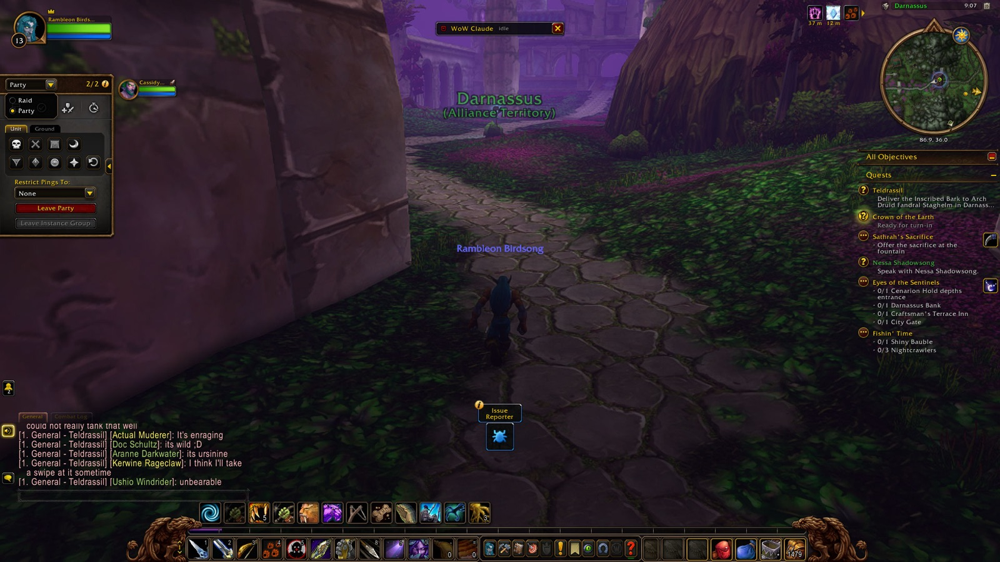
- Picked up
- Grove of the Ancients
- Turned in
- Teldrassil (Cenarion Enclave, level 13)
7TeldrassilLevel 13
A single minute at Rut'theran Village, at the edge of the Veiled Sea, enough to settle Nessa Shadowsong's errand and the Bounty of Teldrassil, and to take up the flight to Auberdine that would carry him onward. Short as it was, it marked a turning point — the island's business, for now, behind him.
- Picked up
- The Bounty of Teldrassil, Flight to Auberdine
- Turned in
- Nessa Shadowsong (Rut'theran Village, level 13), The Bounty of Teldrassil (Rut'theran Village, level 13)
8DarkshoreLevel 13–15
Auberdine opened wide before him — the Veiled Sea crossed, Mist's Edge and the Long Wash explored, Twilight Shore and Twilight Vale walked end to end. Washed Ashore closed out twice, the Red Crystal and Buzzbox units found, Thundris Windweaver's business settled, the Family and the Fishing Pole resolved. Greymist raiders and coastrunners, moonstalkers and rabid thistle bears tested him through the Grove of the Ancients and Bashal'Aran, where ten deaths across Twilight Vale, Remtravel's Excavation, Mist's Edge, Bashal'Aran, and the Tower of Althalaxx marked the cost of the ground gained. Level fourteen came somewhere in Darkshore itself; level fifteen at the Fall of Ameth'Aran, with the Tools of the Highborne and the Cliffspring River's troubles settled alongside it. Strafhe, Banne, and Cassidy shared the long walk, and pictures caught both arrival and each new level.
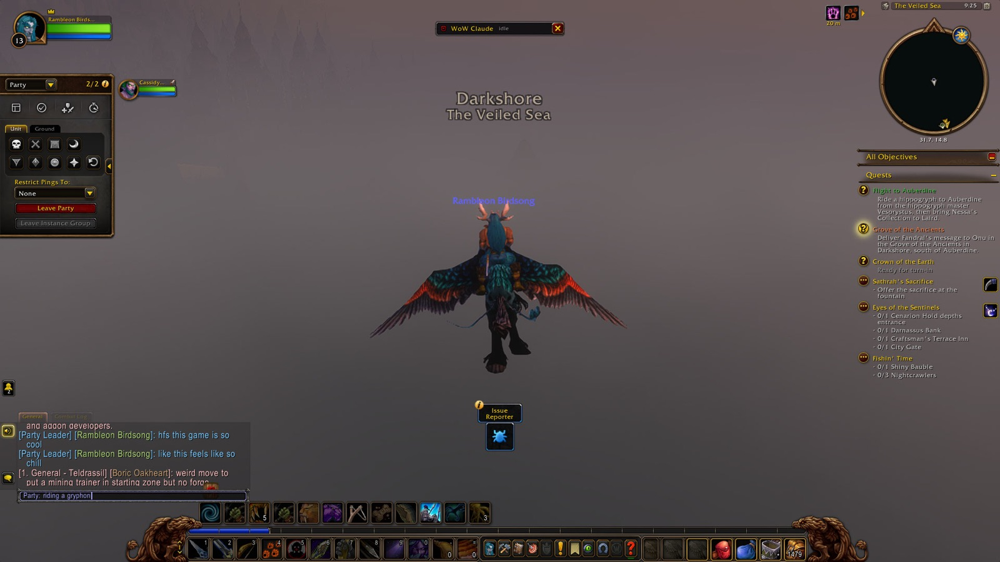
- Picked up
- Washed Ashore ×2, Return to Nessa, WANTED: Jai'vhanel, Cave Mushrooms, The Red Crystal, Buzzbox 827, For Love Eternal, The Family and the Fishing Pole, Beached Sea Turtle, Buzzbox 411, Plagued Lands, How Big a Threat? ×2, The Tower of Althalaxx ×3, Deep Ocean, Vast Sea, Bashal'Aran ×4, Tools of the Highborne, Expanding Horizons, Thundris Windweaver, The Cliffspring River, Beached Sea Creature, Buzzbox 323, As Water Cascades, The Fall of Ameth'Aran, WANTED: Murkdeep!, Fruit of the Sea, The Absent Minded Prospector, The Blackwood Corrupted
- Turned in
- Flight to Auberdine (Auberdine, level 13), Washed Ashore ×2 (Auberdine, level 13), Grove of the Ancients (Grove of the Ancients, level 13), Buzzbox 827 (Auberdine, level 13), Beached Sea Turtle (Auberdine, level 13), How Big a Threat? (Auberdine, level 13), Thundris Windweaver (Auberdine, level 13), Buzzbox 411 (Mist's Edge, level 14), Deep Ocean, Vast Sea (Auberdine, level 14), Beached Sea Creature (Auberdine, level 14), Bashal'Aran ×3 (Bashal'Aran, level 14), The Red Crystal (Auberdine, level 14), The Fall of Ameth'Aran (Twilight Vale, level 15), Tools of the Highborne (Auberdine, level 15), The Tower of Althalaxx ×2 (level 15), The Cliffspring River (Auberdine, level 15)
- Reached
- level 14 (Darkshore), level 15 (Ameth'Aran)
- First met in combat
- Greymist Raider, Greymist Coastrunner, Pygmy Tide Crawler, Young Reef Crawler, Greymist Seer, Moonstalker, Rabid Thistle Bear, Grizzled Thistle Bear, Blackwood Windtalker, Blackwood Pathfinder, Darkshore Thresher, Moonstalker Runt
- Deaths
- 10 (Twilight Vale, Remtravel's Excavation, Mist's Edge, Bashal'Aran, Tower of Althalaxx)
- Company
- Strafhe, Banne, Cassidy
9TeldrassilLevel 15
Nineteen minutes back through Darnassus to Rut'theran Village, just long enough to close Nessa's business for good. Pictures marked his passage through both Teldrassil and Darnassus — a brief breath between longer stretches of road.
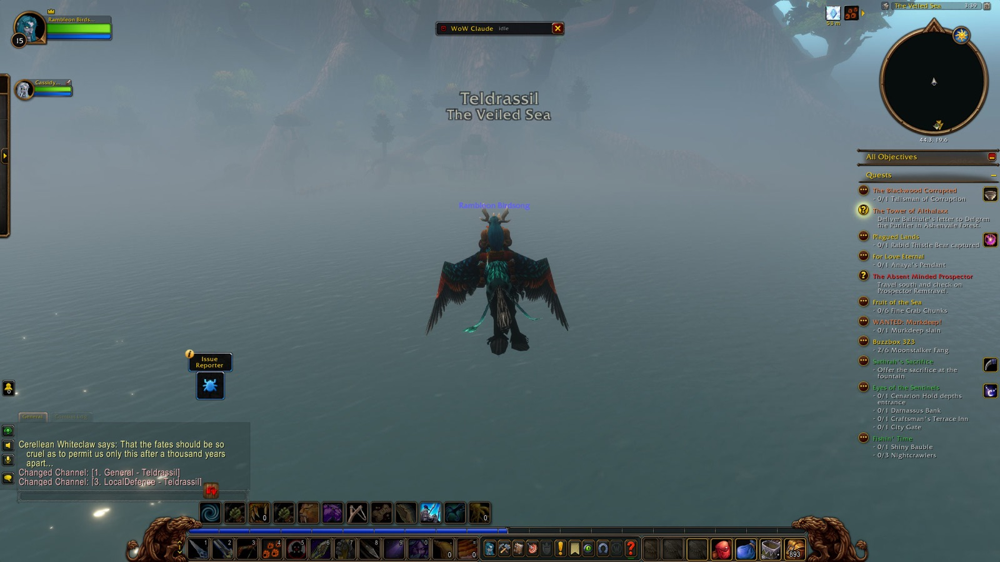
- Turned in
- Return to Nessa (Rut'theran Village, level 15)
10DarkshoreLevel 15–17
Back across the Veiled Sea to Auberdine, where Beached Sea Creatures and Turtles were cleared twice over, the hunt for Murkdeep concluded, and the Blackwood Corrupted finally answered for. Cleansing of the Infected and Tharnariun's Hope were settled, and the Trek to Ashenvale's preparations begun. Tide crawlers, greymist warriors, and Murkdeep himself fell along the coast before Bashal'Aran gave him level sixteen and Twilight Vale gave him seventeen. Six deaths came at Twilight Shore and Blackwood Den — moonstalkers and blackwood warriors proving no easy company. Caerwyn, Reighna, Elentria, Softtaco, Menos, Cassidy, and Noseeum shared the ground with him, and both levels were caught on film.
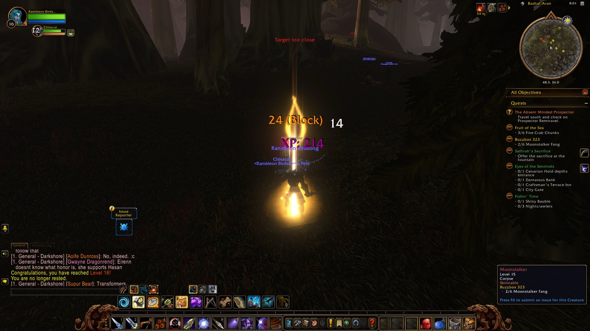
- Picked up
- Beached Sea Creature ×2, Beached Sea Turtle ×2, Plagued Lands, Cleansing of the Infected, Buzzbox 525, Tharnariun's Hope, Trek to Ashenvale, A Lost Master ×2, Escape Through Force
- Turned in
- Beached Sea Creature ×2 (Auberdine, level 15), Beached Sea Turtle ×2 (Auberdine, level 16), WANTED: Murkdeep! (Auberdine, level 15), The Blackwood Corrupted (Auberdine, level 16), Plagued Lands (Auberdine, level 16), Buzzbox 323 (Cliffspring River, level 16), Fruit of the Sea (Auberdine, level 16), Cleansing of the Infected (Auberdine, level 16), Tharnariun's Hope (Auberdine, level 16), How Big a Threat? (Auberdine, level 16), Buzzbox 525 (Twilight Vale, level 17), For Love Eternal (Auberdine, level 17), WANTED: Jai'vhanel (Auberdine, level 17), A Lost Master ×2 (Blackwood Den, level 17), Bashal'Aran (Bashal'Aran, level 17)
- Reached
- level 16 (Bashal'Aran), level 17 (Twilight Vale)
- First met in combat
- Tide Crawler, Greymist Seer, Greymist Netter, Reef Crawler, Greymist Warrior, Murkdeep, Greymist Hunter, Greymist Tidehunter, Moonstalker Runt, Moonstalker, Blackwood Warrior, Rabid Thistle Bear
- Deaths
- 6 (Twilight Shore, Blackwood Den)
- Company
- Caerwyn, Reighna, Elentria, Softtaco, Menos, Cassidy, Noseeum
11AshenvaleLevel 17
Only nine minutes at Maestra's Post and Astranaar, enough to take up the Tower of Althalaxx's business and the Zoram Strand's, and to hand in the long walk to Ashenvale itself. Cassidy was with him when he crossed into the forest, and a picture marked the entry — a new land, however briefly glimpsed.
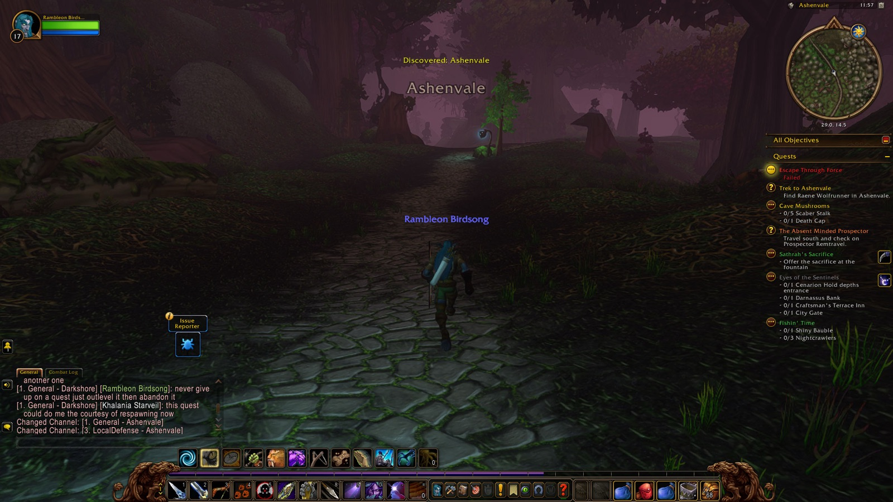
- Picked up
- The Tower of Althalaxx, The Zoram Strand, On Guard in Stonetalon
- Turned in
- The Tower of Althalaxx (Maestra's Post, level 17), Trek to Ashenvale (Astranaar, level 17)
- Company
- Cassidy
12DarkshoreLevel 17
A return through Twilight Vale and Shore, past the Long Wash to Auberdine and Bashal'Aran, taking up Therylune's escape along the way. Moonstalkers and blackwood warriors met him again, along with a den mother and twilight thugs new to his experience, and a single death found him at the Master's Glaive. Tina, Cassidy, and Papa walked it with him, and a picture caught his return to the shore.
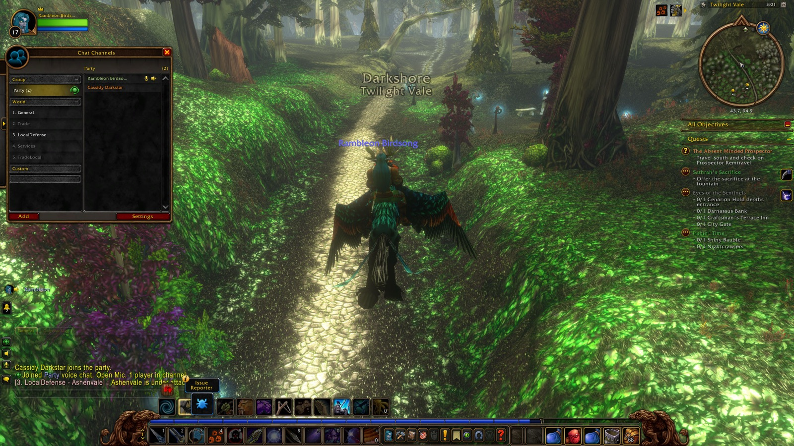
- Picked up
- Therylune's Escape
- First met in combat
- Moonstalker, Blackwood Warrior, Den Mother, Twilight Disciple, Twilight Thug, Moonstalker Matriarch, Moonstalker Runt, Moonstalker Sire
- Deaths
- 1 (The Master's Glaive)
- Company
- Tina, Cassidy, Papa
13AshenvaleLevel 17–18
Back to Maestra's Post to settle the Tower of Althalaxx once more, then on through Astranaar to the Ruins of Ordil'Aran and the Shrine of Aessina, where dark strand cultists, voidwalker minions, and Ilkrud Magthrull himself gave him hard fighting — five deaths across Ashenvale, the Shrine, and Fire Scar Shrine marking how hard. Level eighteen came at the Shrine of Aessina, with Papa and Karis at his side, and pictures caught both his entry into the forest and the moment of the new level.
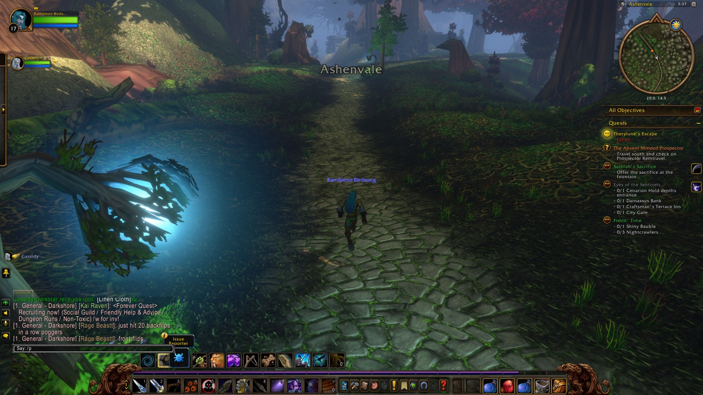
- Picked up
- The Tower of Althalaxx
- Turned in
- The Tower of Althalaxx (Maestra's Post, level 17)
- Reached
- level 18 (The Shrine of Aessina)
- First met in combat
- Dark Strand Cultist, Voidwalker Minion, Dark Strand Adept, Wildthorn Stalker, Ghostpaw Runner, Felslayer, Lesser Felguard, Ilkrud Magthrull
- Deaths
- 5 (Ashenvale, The Shrine of Aessina, Fire Scar Shrine)
- Company
- Papa, Karis
14DarkshoreLevel 18
An hour back at Auberdine, the Long Wash, and Twilight Shore, with Cassidy and Karis for company — no great victories recorded, just the steady work of a returning hunter minding old ground.
- Company
- Cassidy, Karis
15AshenvaleLevel 18
The Zoram Strand and Lake Falathim opened new fighting — ghostpaw runners, saltspittle muckdwellers, wrathtail wave riders and sorceresses among the first he'd faced. At the Shrine of Aessina and in Astranaar he took up Raene's Cleansing and the journey toward Stonetalon Peak, closing the Tower of Althalaxx's business yet again and three rounds of Raene's work at a moonwell, along with the Zoram Strand's errand. Three deaths found him at Lake Falathim and elsewhere in the forest. Passing through Darkshore, Teldrassil, and Darnassus along the way, pictures marked each threshold crossed.
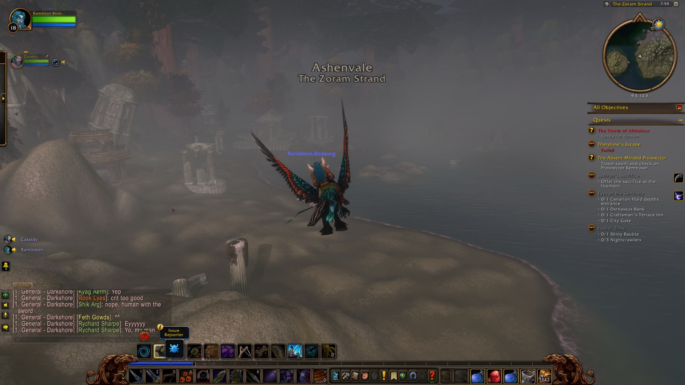
- Picked up
- Journey to Stonetalon Peak, Raene's Cleansing ×4, Culling the Threat, The Tower of Althalaxx, Pridewings of Stonetalon, An Aggressive Defense, Unrequited Love, Researching the Corruption, In Search of Thaelrid
- Turned in
- The Tower of Althalaxx (Maestra's Post, level 18), Raene's Cleansing ×3 (Moonwell, level 18), The Zoram Strand (Astranaar, level 18)
- First met in combat
- Ghostpaw Runner, Saltspittle Muckdweller, Wrathtail Wave Rider, Wrathtail Sorceress, Wrathtail Razortail, Wildthorn Stalker, Ashenvale Bear, Saltspittle Puddlejumper, Saltspittle Warrior
- Deaths
- 3 (Lake Falathim, Ashenvale)
16DarkshoreLevel 18
A short crossing back through Mist's Edge, Auberdine, the Long Wash, and Twilight Vale, with Chud for company and a moonstalker sire the only new face in the fighting. Passing briefly through Ashenvale into the Barrens, a picture caught the entry into that new, dry country. "A long walk on the Long Wash is in order," he wrote — and so it was.
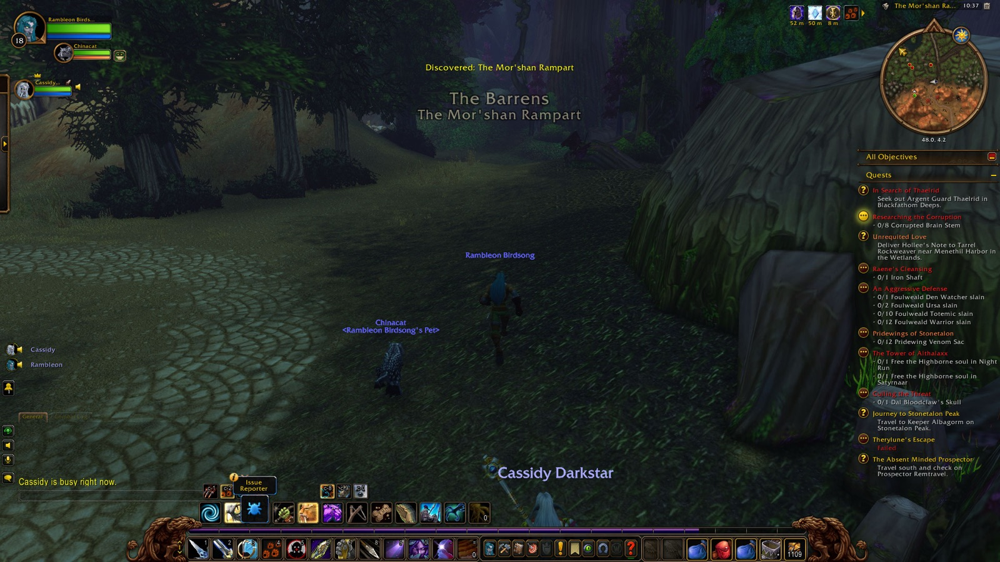
- First met in combat
- Moonstalker Sire
- Company
- Chud
- “a long walk on the long wash is in order” (Chapter 7)
17The BarrensLevel 18
Nineteen minutes through the Mor'shan Rampart and the Gold Road to the Crossroads and Thorn Hill. Hecklefang hyenas and ornery plainstriders were his first taste of the Barrens' wildlife, and the land claimed one death from him before he moved on.
- First met in combat
- Hecklefang Hyena, Ornery Plainstrider
- Deaths
- 1 (The Barrens)
18Stonetalon MountainsLevel 18–19
Greatwood Vale and Camp Aparaje gave way to Webwinder Path, where he settled On Guard in Stonetalon twice over and took up A Gnome's Respite, with Kancho and Cassidy beside him. Venture Co. deforesters and loggers, and his first pridewing wyverns and consorts, tested his patience in the air as much as on the ground — level nineteen arriving at Blackwolf River. At Stonetalon Peak he answered the Journey there at last. "Patience is key with pridewings," he wrote, having learned it the hard way, and a picture marked the new level.
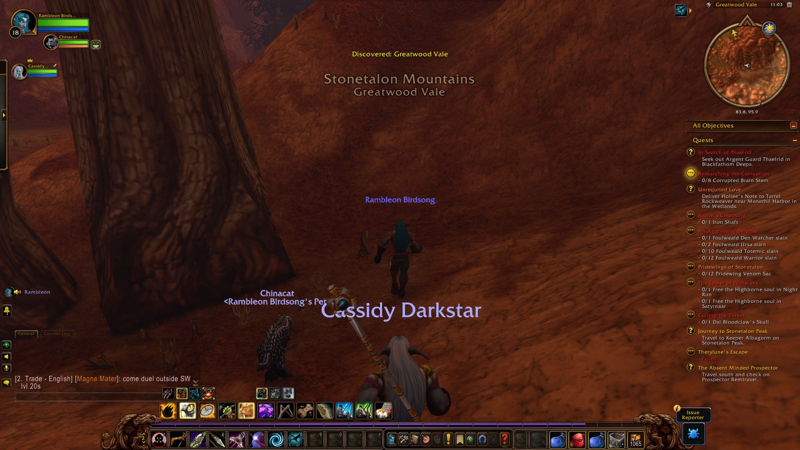
- Picked up
- On Guard in Stonetalon, A Gnome's Respite, Super Reaper 6000, An Old Colleague, A Scroll from Mauren
- Turned in
- On Guard in Stonetalon ×2 (Webwinder Path, level 18), A Gnome's Respite (Webwinder Path, level 19), Journey to Stonetalon Peak (Stonetalon Peak, level 19)
- Reached
- level 19 (Blackwolf River)
- First met in combat
- Deepmoss Venomspitter, Venture Co. Deforester, Venture Co. Logger, Pridewing Wyvern, Pridewing Consort, Blackened Basilisk, Sap Beast
- Company
- Kancho, Cassidy
- “patience is key with pridewings” (Chapter 8)
19AshenvaleLevel 19
Six minutes back through the Zoram Strand and Lake Falathim to Astranaar, just long enough to close out the matter of the Pridewings of Stonetalon. A picture marked his return to the forest.
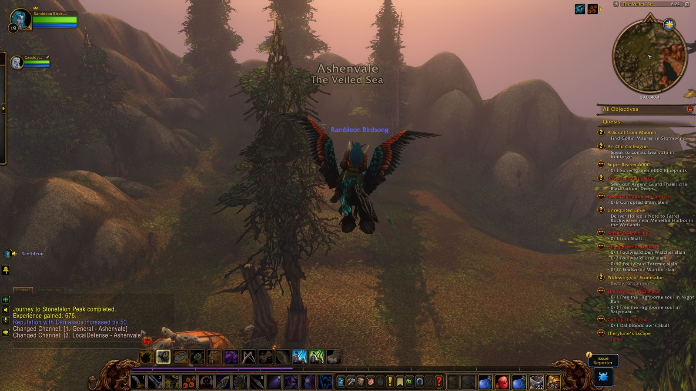
- Turned in
- Pridewings of Stonetalon (Astranaar, level 19)
20DarkshoreLevel 19
Twenty-eight minutes through Twilight Vale and Shore to Auberdine and Remtravel's Excavation, where cracked golems, gravelflint scouts, and a stone behemoth were new and strange company for a hunter used to beasts of fur and claw. Raín and Is walked it with him, and a picture caught his return to the shore.
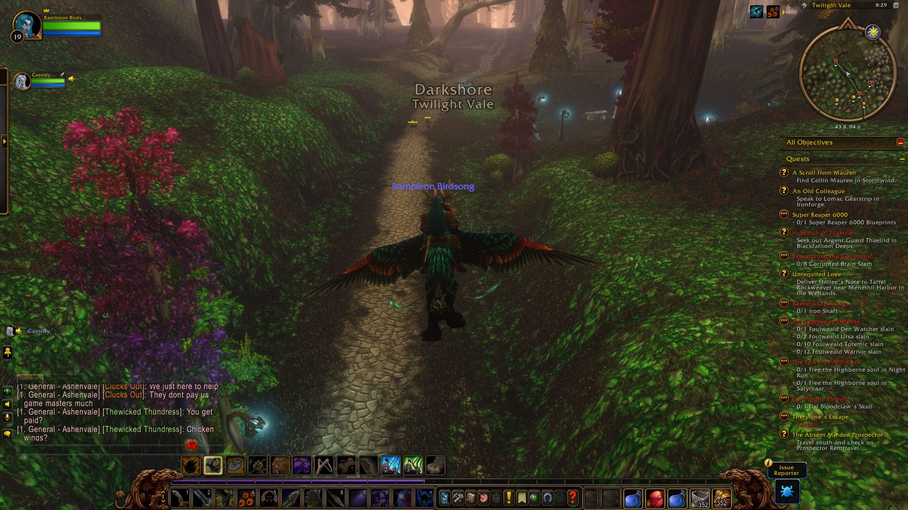
- First met in combat
- Cracked Golem, Gravelflint Scout, Stone Behemoth, Gravelflint Geomancer
- Company
- Raín, Is
21Blackfathom DeepsLevel 19
Thirty-four minutes in the Drowned Sacellum, his first time below the waterline of that place. Murkshallow snapclaws, skittering crustaceans, and blindlight murlocs met him in the dark, and knowledge of the deeps was gathered there — though the depths took two lives from him before he climbed back out, passing again through Darkshore, Ashenvale, and Teldrassil. Pictures marked both his entry into the deeps and his return to the surface world.
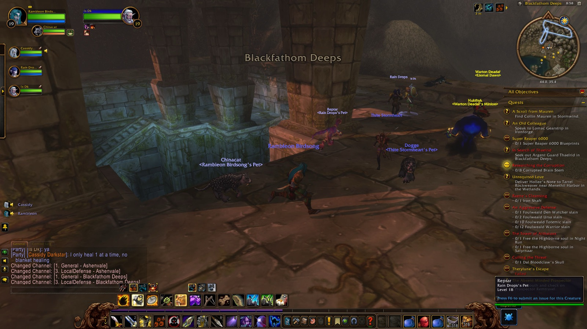
- Picked up
- Knowledge in the Deeps
- First met in combat
- Murkshallow Snapclaw, Skittering Crustacean, Blindlight Murloc
- Deaths
- 2 (The Drowned Sacellum, Blackfathom Deeps)
- Instances
- Blackfathom Deeps
22Stormwind CityLevel 19
A short flight from the sea brought him through Elwynn Forest to Stormwind's harbor and canals for the first time this journey. In Cathedral Square he closed out the matter of Expanding Horizons, and in the Mage Quarter answered A Scroll from Mauren, while Making Do, Humble Beginnings, word of devils in Westfall, and a few other errands were picked up for later. Pictures marked his first steps into the city and a quiet moment in the square itself.
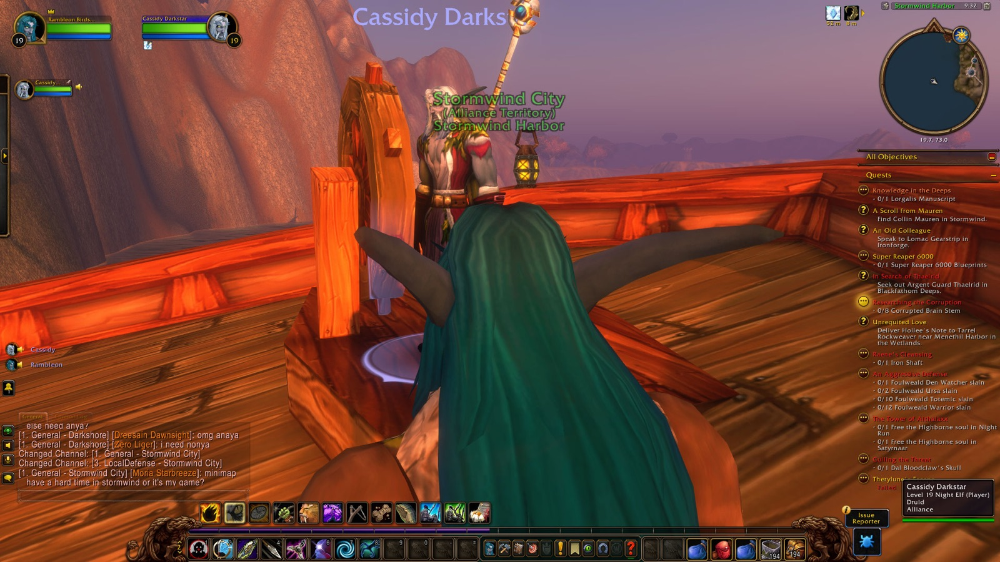
- Picked up
- Making Do, Humble Beginnings, Devils in Westfall, Retrieval for Mauren, Elmore's Task, Gold Dust Exchange
- Turned in
- Expanding Horizons (Cathedral Square, level 19), A Scroll from Mauren (Mage Quarter, level 19)
23WestfallLevel 19
The Jansen Stead and Saldean's Farm introduced him to harvest watchers, dust devils, and the Defias's own bandits and brutes among the goretusks already familiar to him. Westfall Stew was settled at Saldean's Farm, and a long list of further business — Poor Old Blanchy, the Killing Fields, the Defias Brotherhood's troubles, the People's Militia, patrols still to walk — was gathered up for later. The dusty fields cost him one death before he moved on toward Sentinel Hill and Sentinel Tower, pictures marking both.
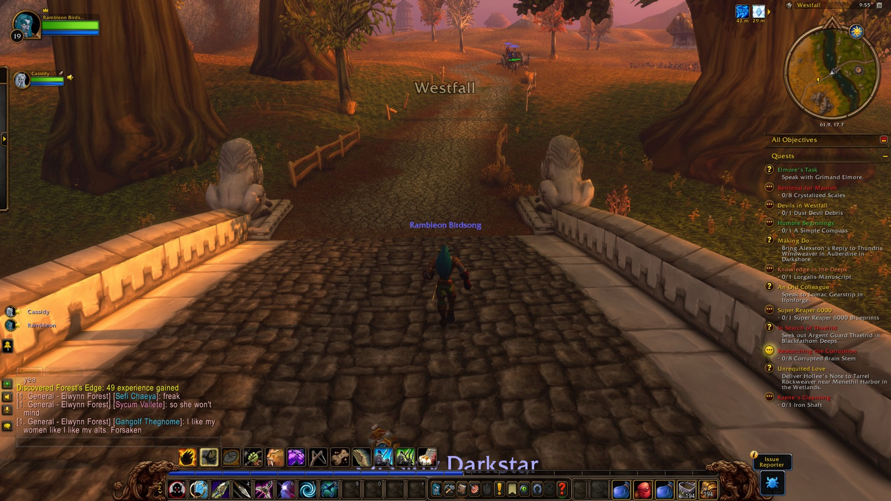
- Picked up
- Westfall Stew, Poor Old Blanchy, The Forgotten Heirloom, The Killing Fields, Harvesting the Harvesters, The Defias Brotherhood, The People's Militia, Patrolling Westfall, Red Leather Bandanas
- Turned in
- Westfall Stew (Saldean's Farm, level 19)
- First met in combat
- Harvest Watcher, Dust Devil, Goretusk, Riverpaw Brute, Riverpaw Bandit
- Deaths
- 1 (Westfall)
24Sentinel TowerLevel 19
Two minutes only, enough to close out his patrol of Westfall before passing on through Duskwood and Elwynn Forest, a picture marking that new, shadowed threshold.
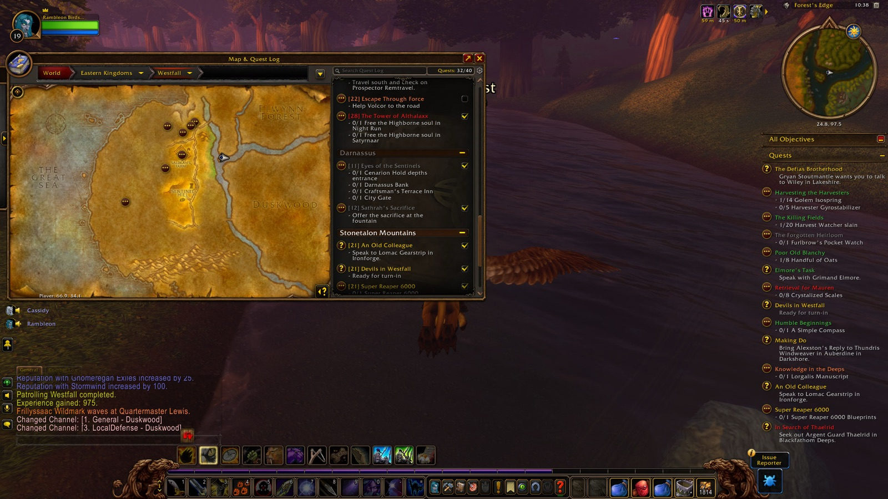
- Turned in
- Patrolling Westfall (level 19)
25Stormwind CityLevel 19
Back through the Deeprun Tram's threshold to the Trade District, the Canals, and the Mage Quarter, where the matter of devils in Westfall was finally settled, Elmore's task closed in the Dwarven District, and the Reading Room's business done in the Royal Library. More errands — Special Delivery for Gaxim, Stormpike's Delivery, an underground assault to look into — were picked up along the way, and the Park gave up its own small task before he moved on. A picture caught his first look at the tram itself.
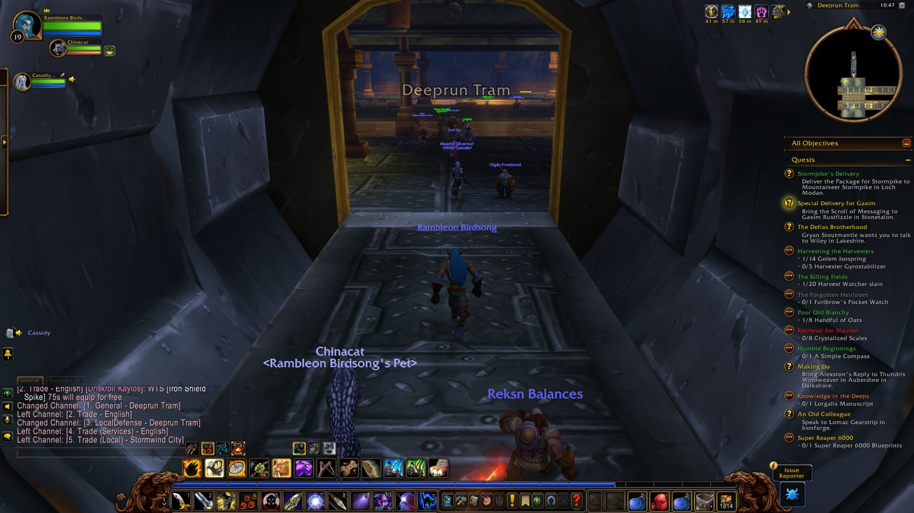
- Picked up
- Special Delivery for Gaxim, Reading Room, Stormpike's Delivery, Underground Assault, Collecting Memories, Oh Brother..., Shelf Picked
- Turned in
- Devils in Westfall (Mage Quarter, level 19), Elmore's Task (Dwarven District, level 19), Reading Room (Royal Library, level 19), Shelf Picked (The Park, level 19)
26DarkshoreLevel 19–20
Back to Auberdine for Making Do's resolution, then on through the Long Wash, Twilight Shore and Vale, Wildbend River, and the Master's Glaive, where level twenty finally came, Escape Through Force settled alongside it. Grizzled thistle bears, giant foreststriders, and a blackwood shaman new to his tally met him along the way, and a single death found him in Twilight Vale. Val, Cassidy, Andria, Fanaandel, Koiya, and Artemisa shared the stretch, and pictures marked his return to Darkshore, the new level, and a quiet moment by the Veiled Sea.
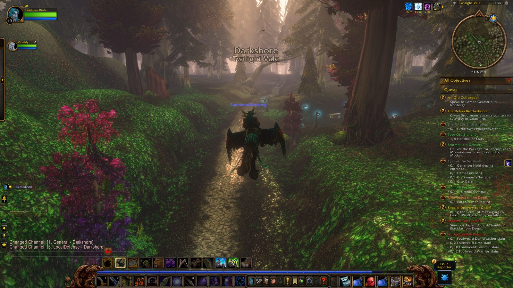
- Picked up
- Escape Through Force, The Powers Below, Therylune's Escape
- Turned in
- Making Do (Auberdine, level 19), Escape Through Force (Auberdine, level 20)
- Reached
- level 20 (The Master's Glaive)
- First met in combat
- Grizzled Thistle Bear, Giant Foreststrider, Moonstalker Sire, Blackwood Warrior, Blackwood Ursa, Blackwood Shaman, Twilight Disciple, Twilight Thug
- Deaths
- 1 (Twilight Vale)
- Company
- Val, Cassidy, Andria, Fanaandel, Koiya, Artemisa
27Stormwind CityLevel 20
Nine minutes through the harbor and canals to Cathedral Square and the Cathedral of Light, where Speaking of Fortitude was settled in the Royal Library alongside word of a Brother Paxton to find. Pictures marked his entry into the city and into the tram below it.
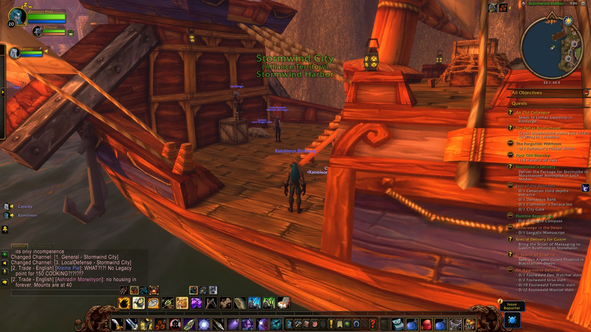
- Picked up
- Speaking of Fortitude, Brother Paxton
- Turned in
- Speaking of Fortitude (Royal Library, level 20)
28Deeprun TramLevel 20
A single minute underground — his first ride, by his own account. "1st train ride," he noted, and a picture caught the moment, small as it was.
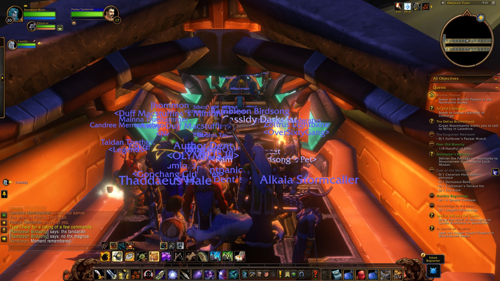
- “1st train ride” (Chapter 9)
29IronforgeLevel 20
Eight minutes among the dwarves — Tinker Town, the Military Ward, the Forlorn Cavern — enough to close out An Old Colleague's business and the Powers Below's troubles, and to pick up word of Techbot's brain, a missing Bingles, and other small mysteries. A picture marked his first entry into the mountain city.
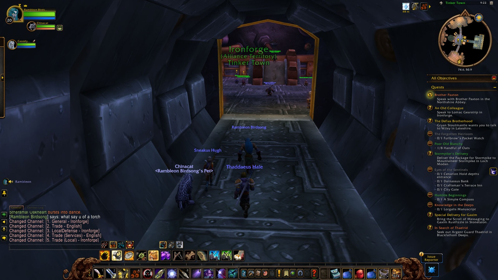
- Picked up
- Save Techbot's Brain!, Find Bingles, The Day After, Ineptitude + Chemicals = Fun
- Turned in
- An Old Colleague (Tinker Town, level 20), The Powers Below (The Forlorn Cavern, level 20)
30AshenvaleLevel 20
Fifty-four minutes through Astranaar, the Shrine of Aessina, and Greenpaw Village to Lake Falathim and the Zoram Strand, settling Therylune's escape and an aggressive defense along the way. Foulweald totemics, pathfinders, and shamans were new and fierce company, costing him a single death in the forest. Rip, Ialach, Alourah, and Sertuvius walked it with him, and a picture marked his return to Ashenvale's familiar ground.
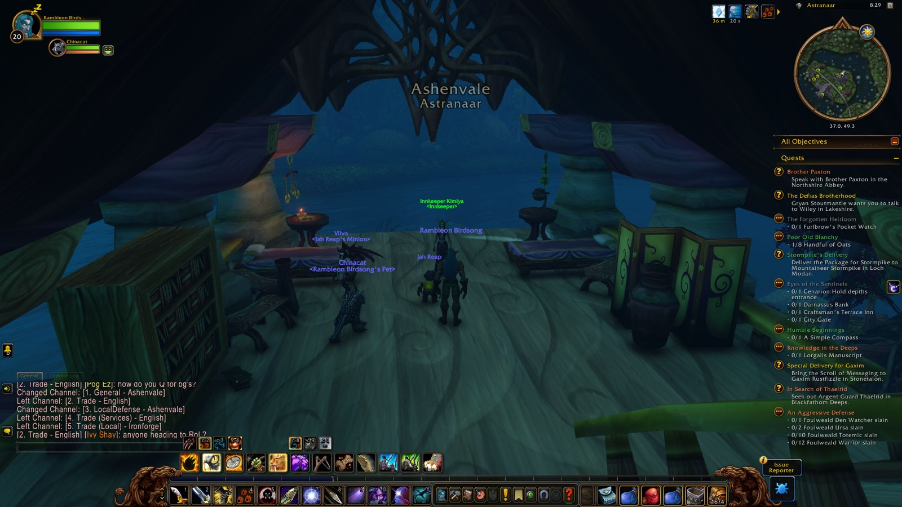
- Turned in
- Therylune's Escape (The Shrine of Aessina, level 20), An Aggressive Defense (Astranaar, level 20)
- First met in combat
- Ghostpaw Runner, Wildthorn Stalker, Foulweald Totemic, Foulweald Pathfinder, Foulweald Warrior, Foulweald Den Watcher, Foulweald Ursa, Foulweald Shaman
- Deaths
- 1 (Ashenvale)
- Company
- Rip, Ialach, Alourah, Sertuvius
31Stonetalon MountainsLevel 20
Back to Stonetalon Peak and Mirkfallon Lake, taking up the reclaiming of the Charred Vale and closing out Special Delivery for Gaxim at Webwinder Path. Antlered coursers, bloodfury ambushers and harpies, rogue flame spirits, and charred ancients made for hard, costly fighting — seven deaths across the Charred Vale, the mountains, and the lake marked how hard, the worst toll he'd taken yet in a single stretch. Cassidy, Arktalis, and Falsila shared the ground with him, and the long road home passed through Darkshore, Stormwind City, and Elwynn Forest, each crossing caught in a picture.
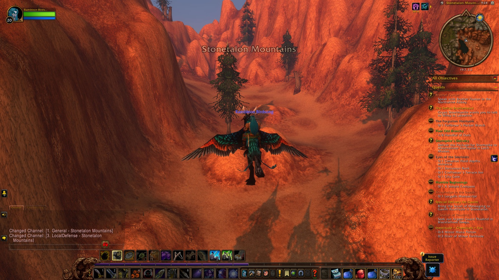
- Picked up
- Reclaiming the Charred Vale
- Turned in
- Special Delivery for Gaxim (Webwinder Path, level 20)
- First met in combat
- Sap Beast, Antlered Courser, Blackened Basilisk, Bloodfury Ambusher, Bloodfury Harpy, Rogue Flame Spirit, Bloodfury Windcaller, Charred Ancient, Singed Basilisk
- Deaths
- 7 (The Charred Vale, Stonetalon Mountains, Mirkfallon Lake)
- Company
- Cassidy, Arktalis, Falsila
32WestfallLevel 20
Back to Saldean's Farm and Sentinel Hill, through the Dust Plains to Moonbrook and the Dagger Hills, picking up word of a Thunderbrew along the way. Riverpaw taskmasters and a full roster of Defias — pillagers, messengers, looters, knuckledusters, pathstalkers, highwaymen — met him in growing numbers, Cassidy and Cortonna beside him. Pictures marked his return to Westfall and his first approach to the Deadmines themselves.
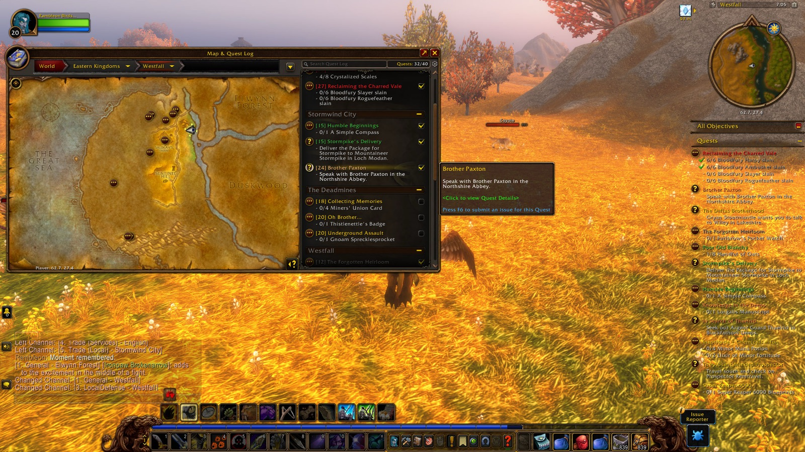
- Picked up
- Thunderbrew
- First met in combat
- Riverpaw Taskmaster, Defias Pillager, Defias Messenger, Defias Looter, Defias Knuckleduster, Defias Pathstalker, Defias Highwayman
- Company
- Cassidy, Cortonna
33The DeadminesLevel 20–21
An hour and nine minutes through the Defias Hideout, the Mast Room, the Goblin Foundry, and Ironclad Cove — his first time in that sunken ship of a place. Defias diggers, conjurers, miners, and overseers gave way to named foes: Marisa du'Paige, Rhahk'Zor, Sneed and his shredder all fell to him and to Dire, Jstermy, and Emchetyre at his side. Two deaths, in the Mast Room and at Ironclad Cove, marked the cost, but level twenty-one came of it, caught in a picture along with quieter moments in the Foundry and the depths themselves.
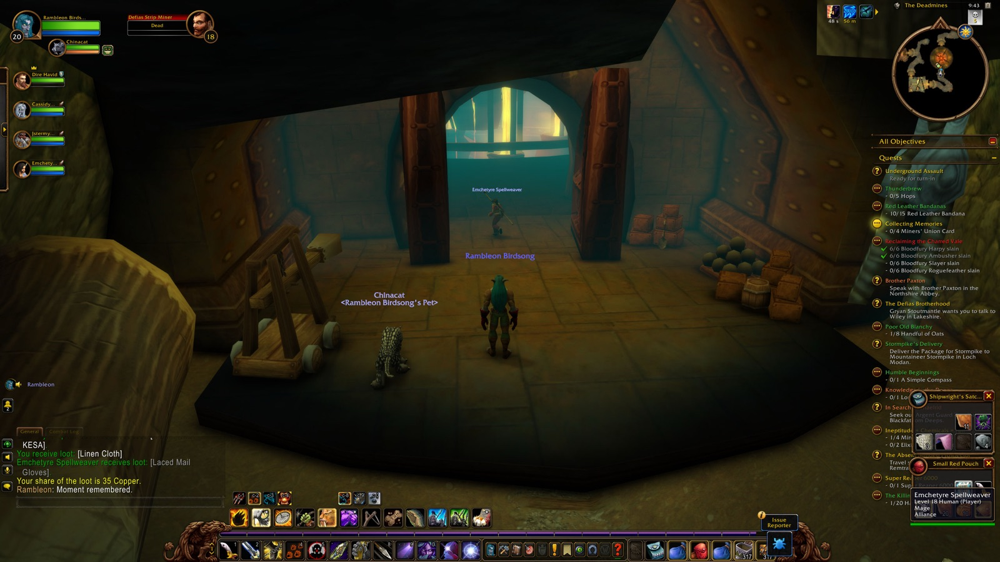
- Reached
- level 21 (The Deadmines)
- First met in combat
- Defias Digger, Defias Conjurer, Marisa du'Paige, Defias Miner, Defias Evoker, Defias Worker, Defias Overseer, Rhahk'Zor, Defias Watchman, Goblin Woodcarver, Sneed, Sneed's Shredder
- Deaths
- 2 (Mast Room, Ironclad Cove)
- Company
- Dire, Jstermy, Emchetyre
- Instances
- Deadmines
34WestfallLevel 21
An hour back at Sentinel Hill and the Dead Acre, with Cassidy beside him, facing harvest reapers and a greater fleshripper new to his count. The road home passed through Duskwood, a picture marking that crossing.
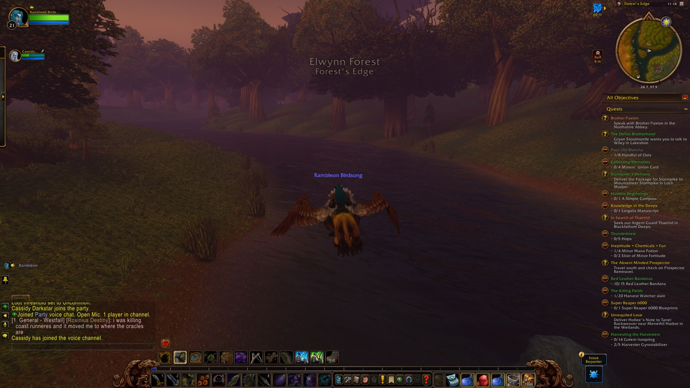
- First met in combat
- Harvest Reaper, Greater Fleshripper
- Company
- Cassidy
35Stormwind CityLevel 21
Ten minutes through the Valley of Heroes and Trade District to the Dwarven District, settling the underground assault and picking up word of gyrodrillmatic excavationators. A fine pair of Bravo's armbands came out of the stretch worth keeping, and a picture marked his return to the city.
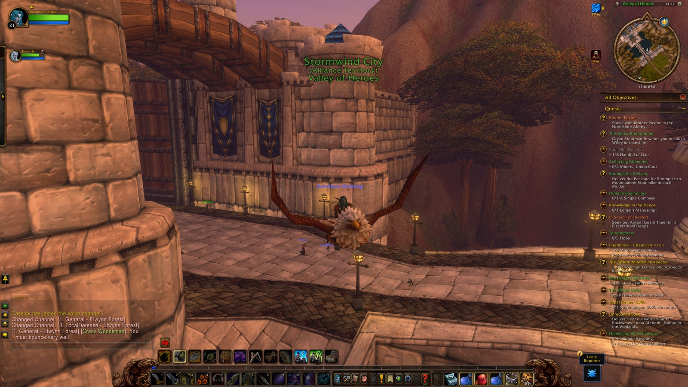
- Picked up
- Gyrodrillmatic Excavationators
- Turned in
- Underground Assault (Dwarven District, level 21)
- Loot worth keeping
- Bravo's Armbands (Uncommon)
36WestfallLevel 21
Back through Saldean's Farm, Sentinel Hill, and Moonbrook to the Dust Plains and the Molsen Farm, closing the Killing Fields and handing over the red bandanas at Sentinel Hill. Riverpaw bandits and brutes, Defias pillagers, pathstalkers, knuckledusters, highwaymen, and a renegade mage filled out the fighting, Raven keeping him company. Pristine leather, harvester's pants, and a cloak of the People's Militia came away worth keeping from the long afternoon's work.
- Picked up
- Westfall Stew, ... and that note you found, Report to Gryan Stoutmantle
- Turned in
- The Killing Fields (Saldean's Farm, level 21), Red Leather Bandanas (Sentinel Hill, level 21)
- First met in combat
- Riverpaw Bandit, Riverpaw Brute, Defias Pillager, Defias Pathstalker, Defias Knuckleduster, Goretusk, Defias Highwayman, Defias Renegade Mage, Harvest Watcher
- Loot worth keeping
- Pristine Leather ×2 (Uncommon), Harvester's Pants (Uncommon), Cloak of the People's Militia (Uncommon)
- Company
- Raven
37Sentinel TowerLevel 21
Two minutes, enough to report to Gryan Stoutmantle and take up the People's Militia's cause, before passing on through Westfall, Duskwood, and Elwynn Forest. A picture marked the brief stop.
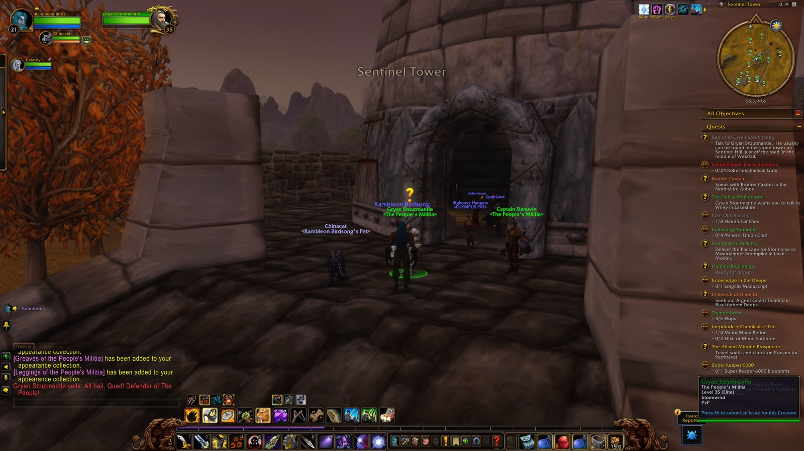
- Picked up
- The People's Militia
- Turned in
- Report to Gryan Stoutmantle (level 21)
38Stormwind CityLevel 21
Ten minutes through the Valley of Heroes and Trade District to Cathedral Square, where Humble Beginnings was finally settled — a quiet errand closed between longer roads.
- Turned in
- Humble Beginnings (Cathedral Square, level 21)
39Elwynn ForestLevel 21
Through Goldshire and Northshire Valley to the Library Wing, settling Brother Paxton's business there and picking up ink supplies and a gold dust exchange to look into, the road passing through Westfall and Duskwood along the way — familiar country revisited with new errands in hand.
- Picked up
- Ink Supplies, Gold Dust Exchange
- Turned in
- Brother Paxton (Library Wing, level 21)
40Stormwind CityLevel 21
Nearly nine hours in the city's streets and canals, Cassidy at his side for much of it — the longest pause of the stretch, little recorded beyond a picture marking a moment in the Trade District, the kind of quiet evening a city like Stormwind is good for.
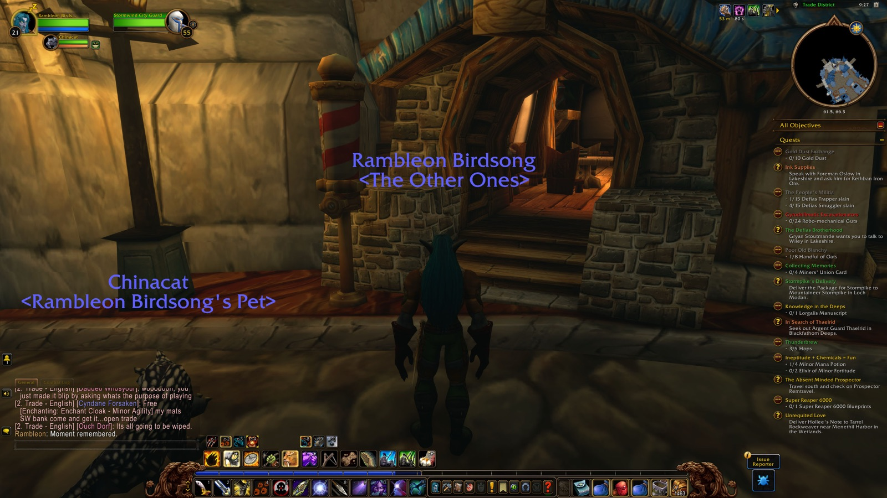
- Company
- Cassidy
41AshenvaleLevel 21–22
Astranaar and Maestra's Post opened into Bathran's Haunt and the Ruins of Ordil'Aran, where Bathran's Hair and Orendil's Cure were settled, and on to the Ruins of Stardust, where Elune's Tear and the Ruins themselves gave him level twenty-two. Forsaken seekers, thugs, herbalists, and a dark strand assassin were new and grim company, alongside Aligar the Tormentor — four deaths across Bathran's Haunt, Ashenvale, and the Ruins marking the cost. A fine haul of gear came out of it: a formula for enchanting, prospector's mitts, a wrangler's belt, a militant shortsword, a demon band. Cassidy, Gabe, Night, Telas, and Ryaj shared the road, and the Culling the Threat quest was finally closed at Astranaar, pictures marking the new level and the crossings through Darkshore.
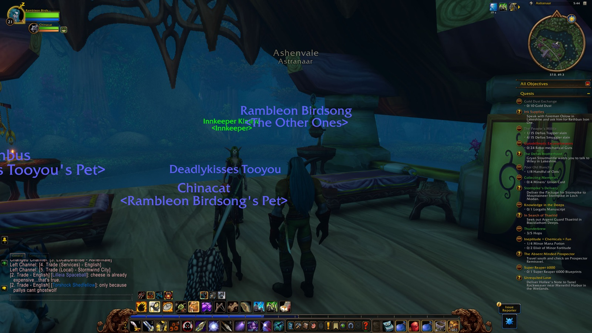
- Picked up
- Bathran's Hair, Orendil's Cure, Supplies to Auberdine, Elune's Tear, The Ruins of Stardust, Fallen Sky Lake
- Turned in
- Bathran's Hair (Maestra's Post, level 21), Orendil's Cure (Astranaar, level 21), Elune's Tear (Astranaar, level 21), The Ruins of Stardust (Astranaar, level 22), Culling the Threat (Astranaar, level 22)
- Reached
- level 22 (The Ruins of Stardust)
- First met in combat
- Ghostpaw Runner, Forsaken Seeker, Forsaken Thug, Forsaken Herbalist, Dark Strand Assassin, Forsaken Scout, Aligar the Tormentor, Ashenvale Bear, Wildthorn Stalker, Shadethicket Moss Eater, Shadethicket Wood Shaper, Shadethicket Raincaller
- Loot worth keeping
- Formula: Enchant 2H Weapon - Lesser Spirit (Uncommon), Prospector's Mitts (Uncommon), Wrangler's Belt of the Owl (Uncommon), Militant Shortsword of Agility (Uncommon), Demon Band (Uncommon)
- Deaths
- 4 (Bathran's Haunt, Ashenvale, The Ruins of Stardust)
- Company
- Cassidy, Gabe, Night, Telas, Ryaj
42Stonetalon MountainsLevel 22
An hour and a half back at Stonetalon Peak, Mirkfallon Lake, and the Charred Vale, where twilight runners joined the familiar basilisks, harpies, and ambushers of that burned country. The road passed through Ashenvale and Darkshore both ways, each threshold marked with a picture — no deaths recorded this time, a rare easy passage through hard ground.
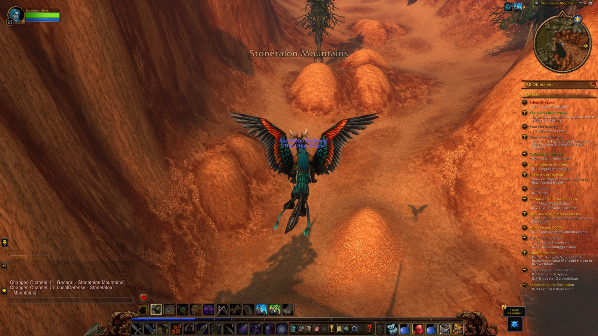
- First met in combat
- Twilight Runner, Blackened Basilisk, Bloodfury Harpy, Bloodfury Ambusher, Bloodfury Windcaller, Singed Basilisk, Charred Ancient
43Stormwind CityLevel 22
An hour at the harbor and in the Mage Quarter, settling Retrieval for Mauren there. A spellcrafter's wand and, better still, a rare Blackwater cutlass came out of the stop — the kind of find worth remembering a city visit by.
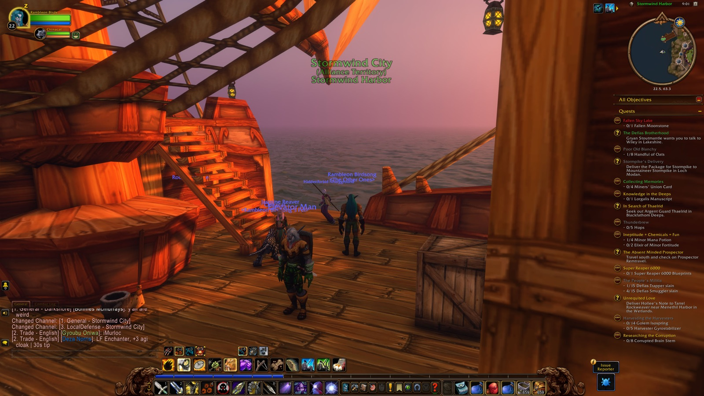
- Turned in
- Retrieval for Mauren (Mage Quarter, level 22)
- Loot worth keeping
- Spellcrafter Wand (Uncommon), Blackwater Cutlass (Rare)
44AshenvaleLevel 22
Astranaar and Raynewood Retreat opened into Nightsong Woods, where Balizar the Umbrage and Caedakar the Vicious joined Aligar the Tormentor and the forsaken scouts and assassins already known to him, along with a mystlash hydra and spined crawlers new to his tally. Supplies to Auberdine and word of Twilight Falls were picked up along the way, Cassidy beside him, the road passing on toward Darkshore, a picture marking that crossing.
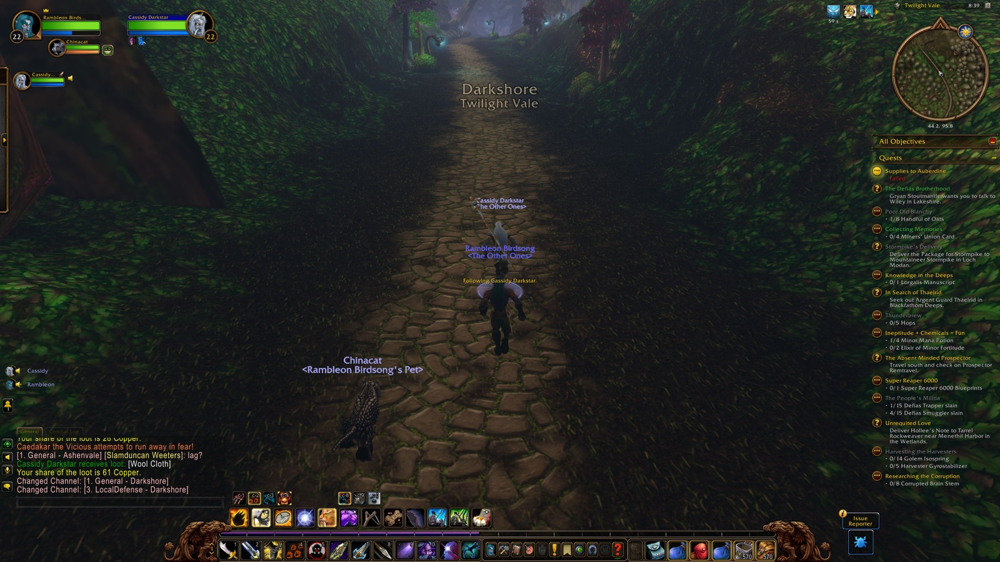
- Picked up
- Supplies to Auberdine, Twilight Falls
- First met in combat
- Wildthorn Stalker, Dark Strand Assassin, Forsaken Scout, Balizar the Umbrage, Caedakar the Vicious, Aligar the Tormentor, Twilight Thug, Twilight Disciple, Wrathtail Sorceress, Wrathtail Wave Rider, Mystlash Hydra, Spined Crawler
- Company
- Cassidy
45Blackfathom DeepsLevel 22
Thirty-eight minutes back in the Drowned Sacellum, murkshallow snapclaws and blindlight murlocs waiting again in the dark — one death found him there before he climbed back out through Darkshore, a picture marking the entry.
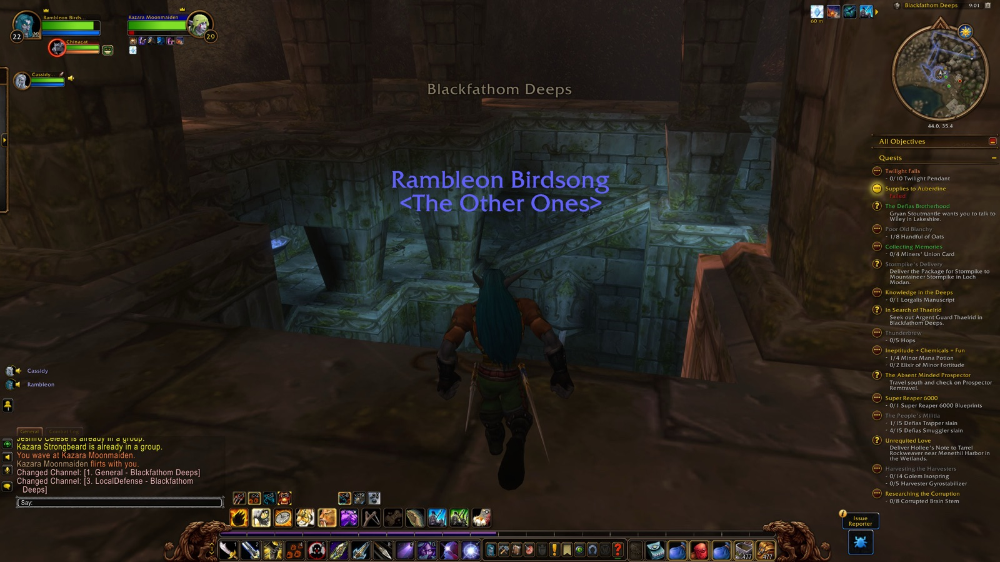
- First met in combat
- Murkshallow Snapclaw, Blindlight Murloc
- Deaths
- 1 (The Drowned Sacellum)
- Instances
- Blackfathom Deeps
46WetlandsLevel 22–23
Baradin Bay opened onto Menethil Harbor and its keep, a new coast entirely, thick with crocolisks of every size and bluegill murlocs in their marshes. Claws from the Deep, young crocolisk skins, an apprentice's duties, spoils of war, and the long business of returning stolen statuettes and war banners filled his hands, while the Greenwarden's cause was answered in the Green Belt — level twenty-three arriving at Menethil Harbor itself. Dragonmaw raiders and fen creepers at Angerfang Encampment cost him eight deaths, the hardest toll of the stretch, but a fine run of gear came of it — a burnished girdle, chain leggings, a scouting cloak, an icicle rod among the finds. Zogg, Cassidy, Natcho, Dazzs, Paladonald, Quad, Jaxsul, and Kalos shared the ground, and the long road home ran through Dun Morogh, Ironforge, Searing Gorge, Burning Steppes, and Elwynn Forest, each crossing caught in a picture.
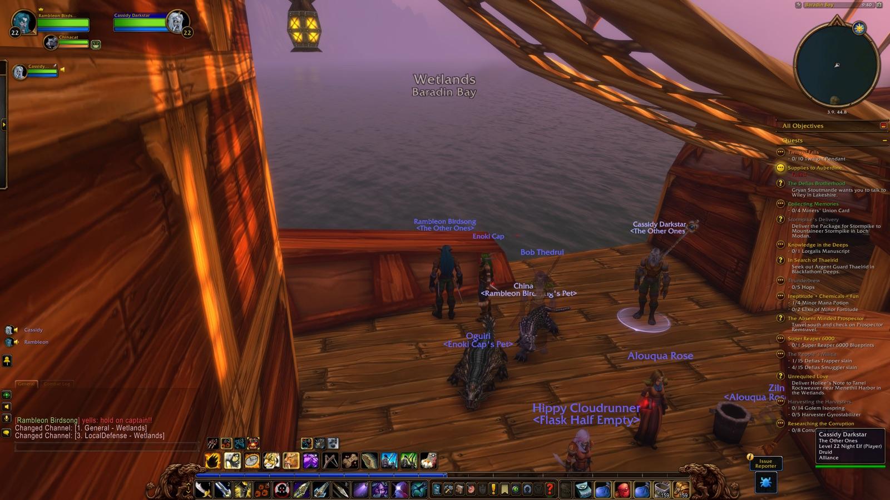
- Picked up
- Claws from the Deep, Young Crocolisk Skins, Bloom of the Heavens, The Third Fleet, The Greenwarden, Alchemical Hazards, Digging Through the Ooze, Spoils of War, In Search of the Excavation Team, Apprentice's Duties, Crocs of the Sky, Reclaiming Goods, War Banners, From the Ashes, The Search Continues, Search More Hovels, Return the Statuette ×2, Razormaw Needling, Trying Times, A Friend of the Family, Nek'rosh's Gambit, The Cursed Crew, Tramping Paws
- Turned in
- Unrequited Love (Menethil Harbor, level 22), Young Crocolisk Skins (Menethil Harbor, level 22), Apprentice's Duties (Menethil Harbor, level 22), Spoils of War (Menethil Keep, level 22), Claws from the Deep (Menethil Harbor, level 22), Reclaiming Goods (Bluegill Marsh, level 23), The Search Continues (Bluegill Marsh, level 23), Search More Hovels (Bluegill Marsh, level 23), Return the Statuette ×2 (Menethil Keep, level 23), War Banners (Menethil Keep, level 23), From the Ashes (Menethil Keep, level 23), The Third Fleet (Menethil Harbor, level 23), The Greenwarden (The Green Belt, level 23), Crocs of the Sky (Menethil Harbor, level 23)
- Reached
- level 23 (Menethil Harbor)
- First met in combat
- Young Wetlands Crocolisk, Wetlands Crocolisk, Giant Wetlands Crocolisk, Mottled Raptor, Bluegill Murloc, Gobbler, Fen Dweller, Bluegill Puddlejumper, Bluegill Warrior, Dragonmaw Raider, Fen Creeper, Skeleton
- Loot worth keeping
- Burnished Girdle (Uncommon), Malleable Chain Leggings (Uncommon), Scouting Cloak of the Monkey (Uncommon), Banded Cloak of the Boar (Uncommon), Icicle Rod (Uncommon), Smoldering Boots (Uncommon), Forest Leather Bracers (Uncommon), Bright Boots (Uncommon), Ridge Cleaver of Magic (Uncommon)
- Deaths
- 8 (Angerfang Encampment, The Green Belt)
- Company
- Zogg, Cassidy, Natcho, Dazzs, Paladonald, Quad, Jaxsul, Kalos
47Stormwind CityLevel 23
Seven minutes through the harbor and Old Town to the Cathedral of Light, where A Friend of the Family was closed twice over, Cassidy beside him, and a fine royal dagger came away worth keeping — word of a shamed lieutenant picked up before he moved on.
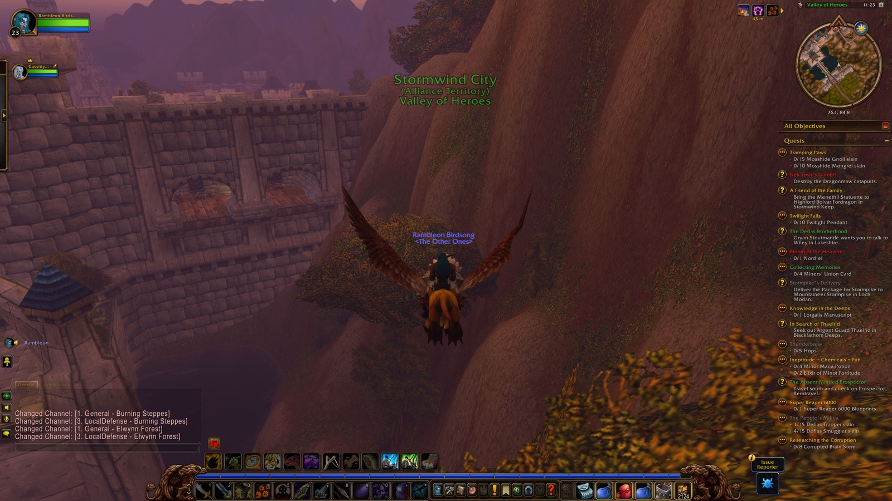
- Picked up
- A Friend of the Family, The Shamed Lieutenant
- Turned in
- A Friend of the Family ×2 (Cathedral of Light, level 23)
- Loot worth keeping
- Royal Dagger (Uncommon)
- Company
- Cassidy
48WetlandsLevel 23–25
Back to Menethil Harbor and on to Whelgar's Excavation Site, where the long business of Ormer's Revenge, uncovering the past, and understanding the present finally paid out level twenty-four in the Wetlands and level twenty-five at the dig itself. Mosshide fenrunners, black ooze, and mottled raptors and razormaws of every kind filled the marsh, and Ironbeard's Tomb and Thelgen Rock proved especially costly — twelve deaths across that stretch, the heaviest single toll of the whole journey. Fine armor came of it regardless: a silk mantle, an excavation cloak, dark leather shoulders, a cavalier two-hander, and a rare pair of Thorbia's gauntlets. Annastasia, Natcho, Gurney, Lanfair, Nawan, Uncle, Artemis, Cdna, Básdorcha, Adryh, Falcon, Big, Tzuyu, Fleche, and Stoneheart all shared some part of the long dig with him, and the road touched Dun Morogh, Ironforge, and the Lion's Pride Inn along the way, each marked with a picture.
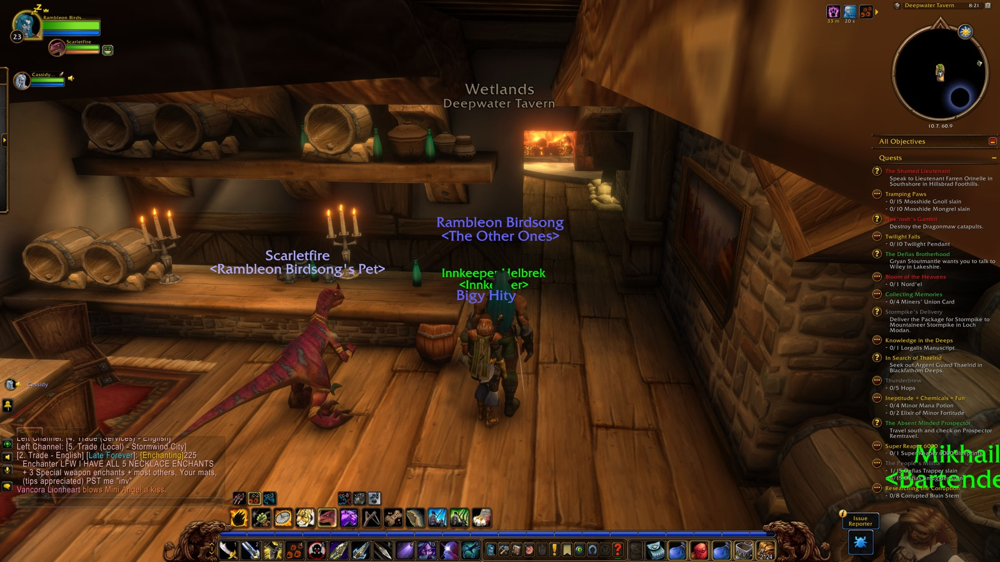
- Picked up
- Ormer's Revenge ×3, Uncovering the Past, In Search of the Excavation Team, Understanding Our Present, Gleaning Our Future, Lost in the Thicket Things, Highland Hides, Quell the Uprising, Essential Artificials, The Restless Dead, Fire Taboo, Fall of Dun Modr
- Turned in
- In Search of the Excavation Team ×2 (Menethil Harbor, level 24), Ormer's Revenge ×3 (Whelgar's Excavation Site, level 25), Uncovering the Past (Whelgar's Excavation Site, level 24), Understanding Our Present (Whelgar's Excavation Site, level 24), Digging Through the Ooze (Menethil Harbor, level 24), Alchemical Hazards (Menethil Harbor, level 24), Tramping Paws (The Green Belt, level 25)
- Reached
- level 24 (Wetlands), level 25 (Whelgar's Excavation Site)
- First met in combat
- Wetlands Crocolisk, Mosshide Fenrunner, Black Ooze, Mottled Raptor, Mottled Screecher, Mottled Scytheclaw, Mottled Razormaw, Goaz Warder, Sarltooth, Leech Stalker, Cave Stalker, Mosshide Mongrel
- Loot worth keeping
- Silk Mantle of Gamn (Uncommon), Excavation Cloak (Uncommon), Fortified Cloak of Shadow Wrath (Uncommon), Dark Leather Shoulders (Uncommon), Cavalier Two-hander of the Falcon (Uncommon), Raptor's End (Uncommon), Thorbia's Gauntlets (Rare)
- Deaths
- 12 (Ironbeard's Tomb, Whelgar's Excavation Site, Thelgen Rock, Wetlands)
- Company
- Annastasia, Natcho, Gurney, Lanfair, Nawan, Uncle, Artemis, Cdna, Básdorcha, Adryh, Falcon, Big, Tzuyu, Fleche, Stoneheart
49IronforgeLevel 25
Forty-three minutes among the dwarves again, Data Rescue and word of a grand betrayal picked up in passing. Barbaric gloves, a scaled leather belt, a dervish tunic, and shadow weaver leggings came away from the Great Forge and the Military Ward worth keeping — a solid haul for a short visit.
- Picked up
- Data Rescue, The Grand Betrayal
- Loot worth keeping
- Barbaric Gloves (Uncommon), Scaled Leather Belt of the Falcon (Uncommon), Dervish Tunic of Arcane Wrath (Uncommon), Shadow Weaver Leggings (Uncommon)
50Hillsbrad FoothillsLevel 25
Five minutes at Southshore, his first steps on that coast, picking up word of a lack of virtue, a coastal path to walk, and a brewer's trade to settle. The Shamed Lieutenant's business was closed there too, a picture marking his first entry into the Foothills.
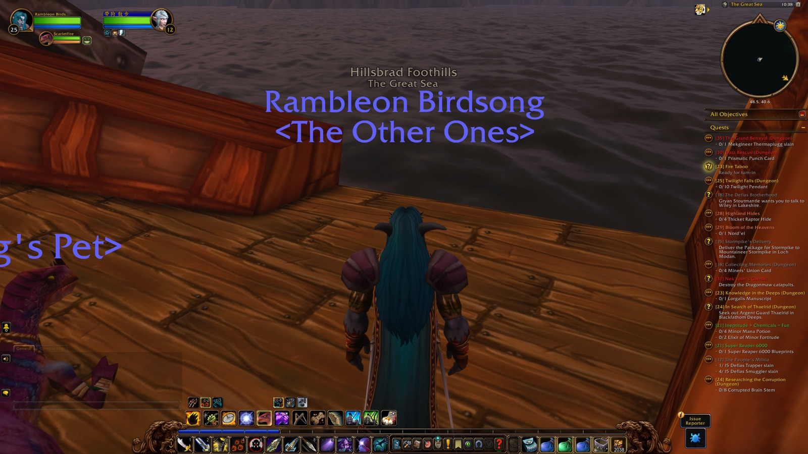
- Picked up
- A Lack of Virtue, Down the Coast, Brewer's Trade
- Turned in
- The Shamed Lieutenant (Southshore, level 25)
51WetlandsLevel 25
Nineteen minutes back to Menethil Harbor by a long road — through Dustwallow Marsh, the Barrens, Mulgore, Shen'dralas, Desolace, Stonetalon Mountains, Ashenvale, Darkshore, and Teldrassil — closing the matter of the lack of virtue there. Pictures marked nearly every threshold of that long, winding passage home.
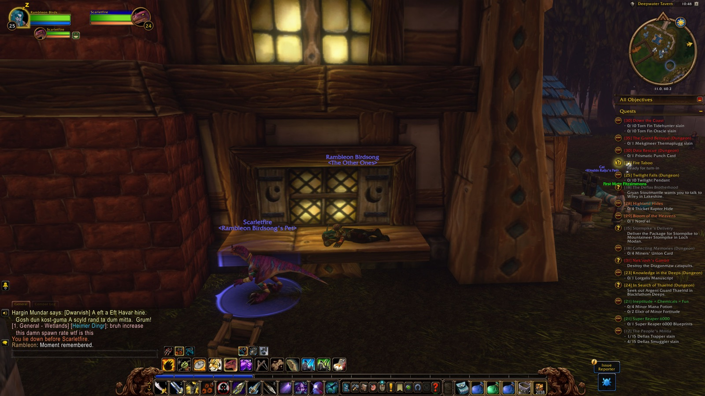
- Turned in
- A Lack of Virtue (Menethil Harbor, level 25)
52DarnassusLevel 25
Twenty-eight minutes in the city, through the Temple of the Moon, the Temple Gardens, and the Cenarion Enclave, nothing turned in but the quiet itself, pictures marking the Temple and a moment by the Veiled Sea beyond the city's walls.
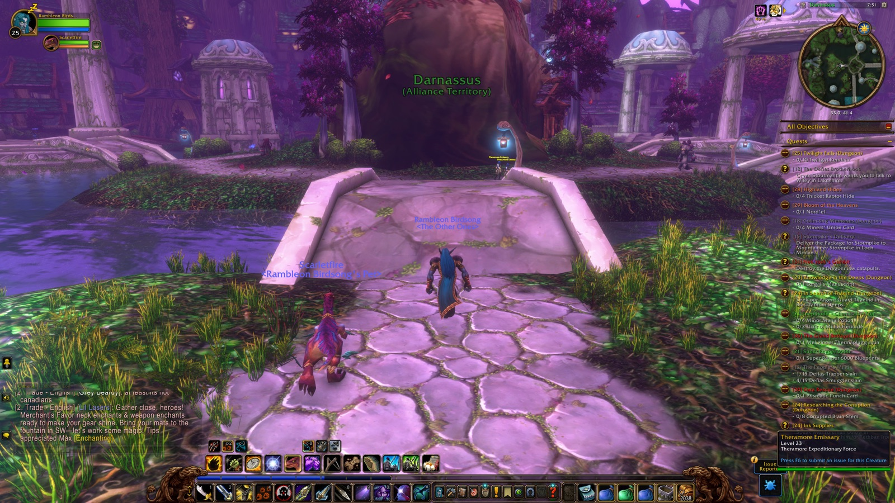
53Stonetalon MountainsLevel 25
Back to Stonetalon Peak to finally close the business of the Charred Vale, bloodfury roguefeathers, slayers, and storm witches joining the familiar harpies and ambushers of that country — two deaths there before the quest was done. "Leaving that Charred Vale quest open was bothering me," he wrote, "solo'd it complete" — a small, hard-won satisfaction, earned alone.
- Picked up
- Reclaiming the Charred Vale
- Turned in
- Reclaiming the Charred Vale (Stonetalon Peak, level 25)
- First met in combat
- Antlered Courser, Bloodfury Harpy, Bloodfury Windcaller, Blackened Basilisk, Bloodfury Ambusher, Bloodfury Roguefeather, Charred Ancient, Bloodfury Slayer, Bloodfury Storm Witch
- Deaths
- 2 (The Charred Vale)
- “leaving that charred vale quest open was bothering me... solo'd it complete” (Chapter 18)
54AshenvaleLevel 25–26
The long road through Astranaar, Raynewood Retreat, and Nightsong Woods opened onto Xavian, Night Run, Splintertree Post, and the Dor'Danil Barrow Den, where Kayneth Stillwind's errand and the Vengeful Trail were settled at Forest Song. Withered ancients, ghostpaw alphas, bleakheart satyrs and hellcasters made for fierce company, costing him eight deaths across Nightsong Woods, Night Run, Falfarren River, Satyrnaar, and the Barrow Den — but level twenty-six came of it at Astranaar, a gleaming crescent necklace turned in alongside it. A bristlebark buckler and a replica of that same necklace came away worth keeping. Mitzvah, Trogwar, and Jina shared the road. "No bars in Astranaar," he noted — a small, dry observation from a long night's work.
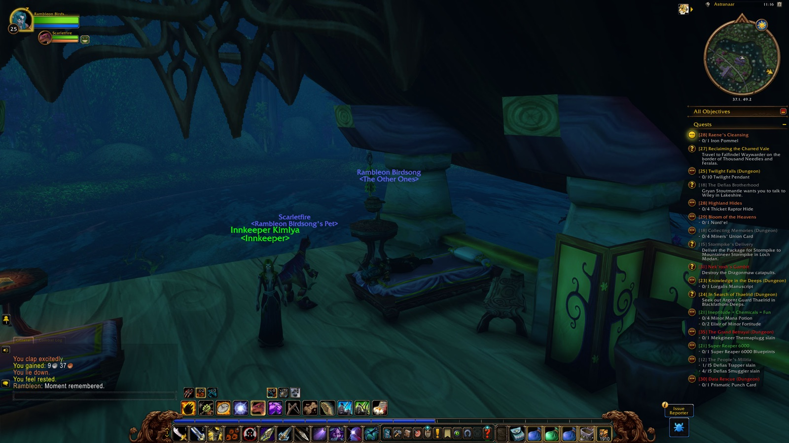
- Picked up
- Kayneth Stillwind, Raene's Cleansing ×2, Gleaming Crescent Necklace, Forsaken Diseases, Vengeful Trail, Shared Fury, The Tower of Althalaxx, Supplies to Auberdine
- Turned in
- Raene's Cleansing ×2 (Moonwell, level 25), Kayneth Stillwind (Forest Song, level 25), Vengeful Trail (Forest Song, level 25), Gleaming Crescent Necklace (Astranaar, level 26), The Tower of Althalaxx (Maestra's Post, level 26)
- Reached
- level 26 (Astranaar)
- First met in combat
- Wildthorn Venomspitter, Elder Ashenvale Bear, Withered Ancient, Ghostpaw Alpha, Crazed Ancient, Shadethicket Stone Mover, Shadethicket Bark Ripper, Felmusk Shadowstalker, Bleakheart Trickster, Wildthorn Lurker, Bleakheart Satyr, Bleakheart Hellcaller
- Loot worth keeping
- Bristlebark Buckler (Uncommon), Replica Crescent Necklace (Uncommon)
- Deaths
- 8 (Nightsong Woods, Night Run, Falfarren River, Satyrnaar, The Dor'Danil Barrow Den)
- Company
- Mitzvah, Trogwar, Jina
- “no bars in astranaar” (Chapter 18)
55DarkshoreLevel 26
Three and a half hours back through Twilight Vale and Shore to Auberdine and the Cliffspring River, closing the Tower of Althalaxx's business one more time — a single death at the tower itself the only cost, a picture marking his return to the shore.
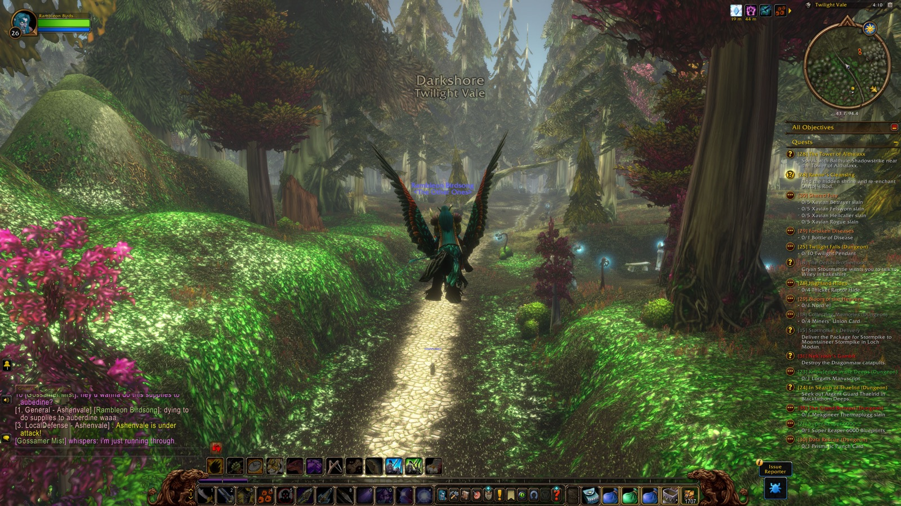
- Picked up
- The Tower of Althalaxx
- Turned in
- The Tower of Althalaxx (level 26)
- Deaths
- 1 (Tower of Althalaxx)
56AshenvaleLevel 26
Back through the Zoram Strand to Mystral Lake and Silverwind Refuge, settling four rounds of Raene's Cleansing there and the matter of elemental bracers besides. Befouled water elementals and a tideress joined the ghostpaw howlers and bloodtooth guards of Bloodtooth Camp, where a single death found him before he moved on, a picture marking his return to the forest.
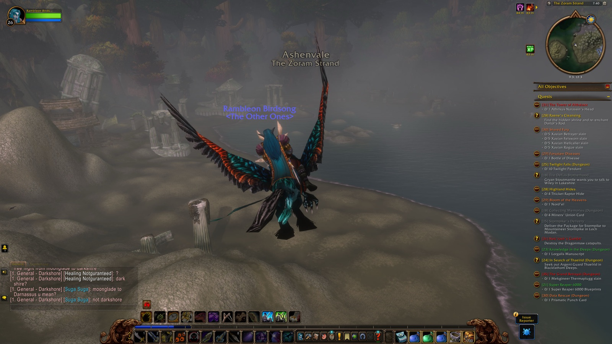
- Picked up
- Elemental Bracers, Raene's Cleansing ×4, Mage Summoner
- Turned in
- Raene's Cleansing ×4 (Mystral Lake, level 26), Elemental Bracers (Silverwind Refuge, level 26)
- First met in combat
- Ashenvale Bear, Foulweald Totemic, Befouled Water Elemental, Tideress, Ghostpaw Howler, Bloodtooth Guard, Foulweald Warrior, Shadethicket Stone Mover, Shadethicket Bark Ripper
- Deaths
- 1 (Bloodtooth Camp)
57The BarrensLevel 26
Thirty minutes through the Mor'shan Rampart, Dreadmist Peak and Den, to the Stagnant Oasis and the Field of Giants, where a found note was finally returned and Sarilus Foulborne first crossed his path. A picture marked his entry into that wide, dry country, and word of stepping stones ahead was picked up before he moved on.
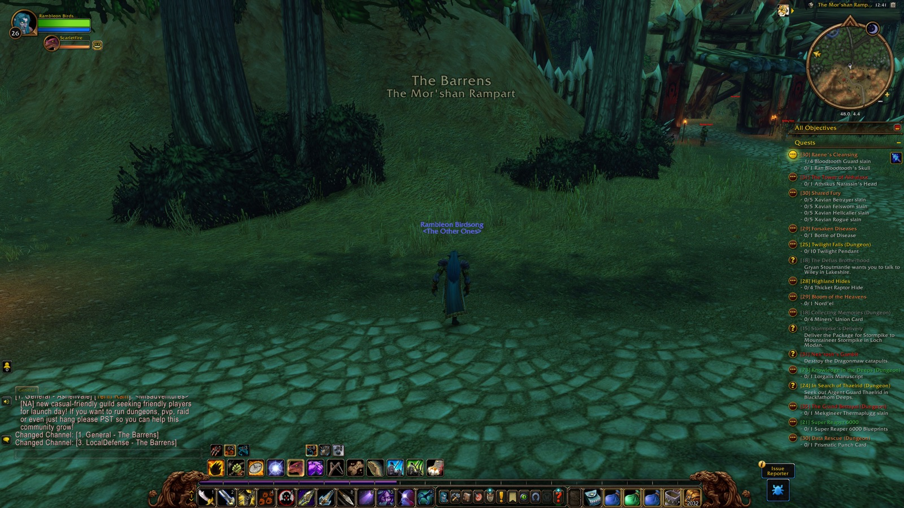
- Picked up
- Stepping Stones
- Turned in
- ... and that note you found (Field of Giants, level 26)
- First met in combat
- Sarilus Foulborne
58Thousand NeedlesLevel 26
Nine minutes at the Great Lift and Camp E'thok, his first look at that strange canyon country — venomous cloud serpents, galak maulers and marauders, and needles cougars all new to him. A single death found him there, a picture marking the brief, striking entry.
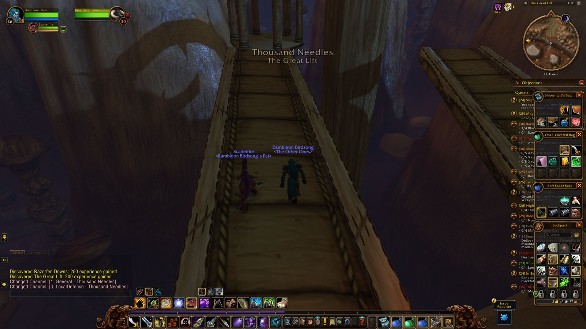
- First met in combat
- Venomous Cloud Serpent, Galak Mauler, Galak Marauder, Needles Cougar
- Deaths
- 1 (Thousand Needles)
59FeralasLevel 26
Fifteen minutes at Thalanaar and the Lower Wilds, a long road behind him through Thousand Needles, the Barrens, Dustwallow Marsh, Mulgore, Shen'dralas, Desolace, Stonetalon Mountains, and Darkshore — enough to finally close the Charred Vale's business for good, a constable's buckler coming away worth keeping. Pictures marked nearly every step of that winding passage into a land barely glimpsed.
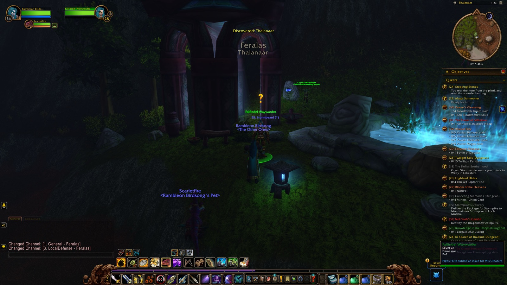
- Turned in
- Reclaiming the Charred Vale (Thalanaar, level 26)
- Loot worth keeping
- Constable Buckler (Uncommon)
60AshenvaleLevel 26
Twelve minutes back through the Zoram Strand to Silverwind Refuge, settling the Mage Summoner's business there, passing through the Lion's Pride Inn along the way — a short, easy return to familiar ground.
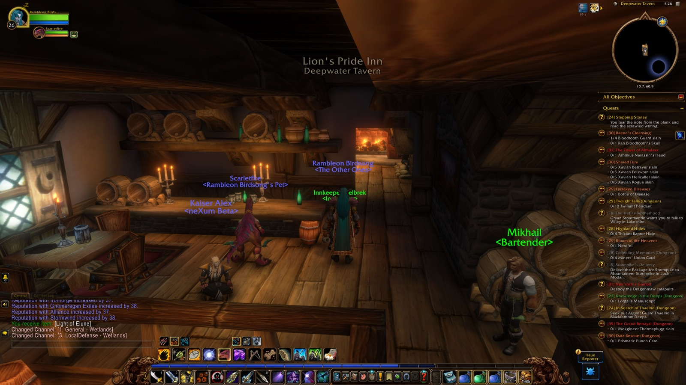
- Turned in
- Mage Summoner (Silverwind Refuge, level 26)
61WetlandsLevel 26
Back to Menethil Harbor and Bluegill Marsh, settling the Fire Taboo and the matter of blisters on the land, and finally closing the Fall of Dun Modr at that ruin itself. Fen lords and highland raptors, lashtails, and scytheclaws filled out the fighting, and a phytoblade came away worth keeping before the road turned toward the Arathi Highlands, a picture marking that new threshold.
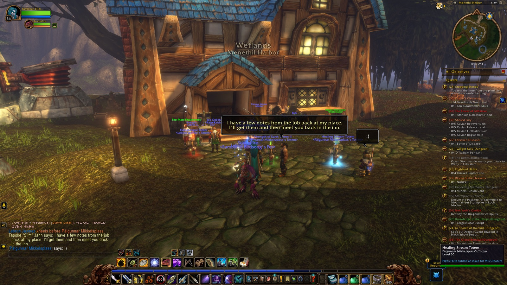
- Picked up
- Blisters on the Land, Carnage, Horrors in the Highland, The Thandol Span, A Grim Task, The Dark Iron War
- Turned in
- Fire Taboo (The Green Belt, level 26), Blisters on the Land (The Green Belt, level 26), Fall of Dun Modr (Dun Modr, level 26)
- First met in combat
- Young Wetlands Crocolisk, Fen Creeper, Fen Lord, Fen Dweller, Wetlands Crocolisk, Mosshide Brute, Bluegill Muckdweller, Highland Raptor, Highland Lashtail, Highland Scytheclaw, Maddened Rotclaw
- Loot worth keeping
- Phytoblade (Uncommon)
62Arathi HighlandsLevel 26–27
Eleven minutes at Thandol Span and Stromgarde Keep — his first steps in that storied, ruined country — level twenty-seven arriving at the keep itself, two deaths along the span and in the highlands marking the cost of the crossing. A picture caught the new level, and the Lion's Pride Inn welcomed him back through on the way out.
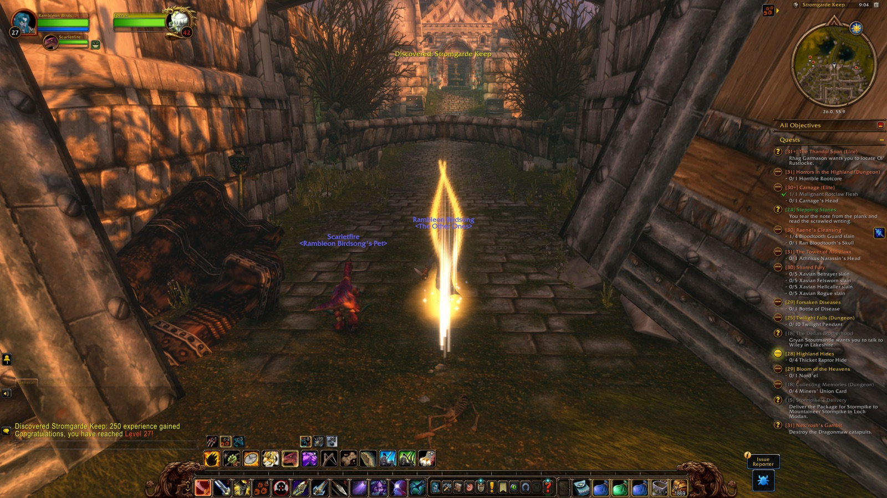
- Reached
- level 27 (Stromgarde Keep)
- Deaths
- 2 (Thandol Span, Arathi Highlands)
63WetlandsLevel 27
Back to Menethil Harbor by way of Dun Morogh, Ironforge, and the Lion's Pride Inn, closing the Cursed Crew's business, the razormaw needling, and trying times all at once, and finally settling Nek'rosh's gambit at Angerfang Encampment. Cursed sailors and marines, a first mate named Snellig, and highland razormaws filled the fighting, costing him two deaths at Saltspray Glen. Shadeborn, Verru, Morrigan, and Melindhra shared the ground, pictures marking the long road back through the mountain passes.
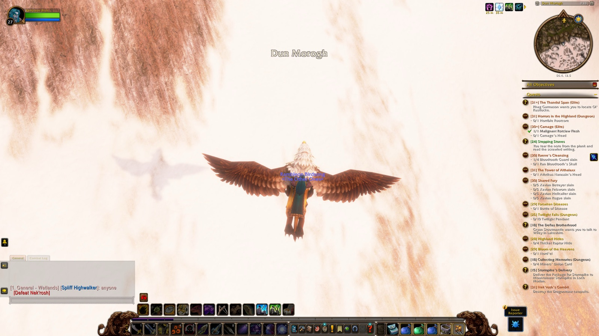
- Picked up
- Lifting the Curse, Death to the Dragonmaw, Defeat Nek'rosh
- Turned in
- The Cursed Crew (Menethil Harbor, level 27), Razormaw Needling (level 27), Trying Times (level 27), Nek'rosh's Gambit (Angerfang Encampment, level 27)
- First met in combat
- Bluegill Warrior, Giant Wetlands Crocolisk, Cursed Sailor, First Mate Snellig, Cursed Marine, Bluegill Puddlejumper, Bluegill Murloc, Highland Razormaw, Dragonmaw Raider
- Deaths
- 2 (Saltspray Glen)
- Company
- Shadeborn, Verru, Morrigan, Melindhra
64Hillsbrad FoothillsLevel 27
An hour and three quarters at Southshore, Nethander Stead, and Dun Garok, settling the brewer's trade, the coastal path, and a hoard of Hillsbrad's own finally found. Elder moss creepers, torn fin tidehunters and oracles, mudsnout gnolls, and a vicious gray bear filled the fighting — two deaths at the Western Strand the cost of it. A fine pair of brewer's bracers and an archer's longbow came away worth keeping. Khadric, 空枪, Needsmo, and Cassidy shared the road, which wound on through Southshore Town Hall, Dalaran, the Alterac Mountains, Hillsbrad, Silverpine Forest, and a long chain of familiar country back toward Darkshore, nearly every threshold marked with a picture.
- Picked up
- Syndicate Assassins, Farren's Proof, Hillsbrad's Hoard
- Turned in
- Brewer's Trade (Southshore, level 27), Down the Coast (Southshore, level 27), Hillsbrad's Hoard (Southshore, level 27)
- First met in combat
- Elder Moss Creeper, Feral Mountain Lion, Torn Fin Tidehunter, Torn Fin Oracle, Mudsnout Gnoll, Vicious Gray Bear
- Loot worth keeping
- Brewer's Bracers (Uncommon), Archer's Longbow (Uncommon)
- Deaths
- 2 (Western Strand)
- Company
- Khadric, 空枪, Needsmo, Cassidy
65AshenvaleLevel 27–28
Back through the Zoram Strand to Raynewood Retreat and Nightsong Woods, where forsaken dark stalkers, infiltrators, intruders, and assassins joined bleakheart satyrs and hellcasters in testing him hard — one death at Splintertree Post the cost. At Forest Song the forsaken diseases were finally answered, and at Astranaar Fallen Sky Lake's business closed out level twenty-eight. A watcher's cape, a fine suit of snapbrook armor, and a durable hat of stamina came away worth keeping, and pictures marked the new level and his passage through Teldrassil and Darnassus on the way.

- Picked up
- Insane Druids, Talk of the Town, Soothing Turtle Bisque
- Turned in
- Forsaken Diseases (Forest Song, level 27), Fallen Sky Lake (Astranaar, level 28)
- Reached
- level 28 (Forest Song)
- First met in combat
- Forsaken Dark Stalker, Forsaken Infiltrator, Forsaken Intruder, Forsaken Assassin, Shadethicket Stone Mover, Giant Ashenvale Bear, Horde Scout, Wildthorn Lurker, Bleakheart Satyr, Bleakheart Trickster, Bleakheart Shadowstalker, Bleakheart Hellcaller
- Loot worth keeping
- Watcher's Cape of the Whale (Uncommon), Snapbrook Armor (Uncommon), Durable Hat of Stamina (Uncommon)
- Deaths
- 1 (Splintertree Post)
66WetlandsLevel 28
Thirty-eight minutes back to Menethil Harbor, settling the Bloom of the Heavens there and finally lifting the curse at the Lost Fleet. Bluegill raiders and warriors joined Captain Halyndor and First Mate Snellig in the fighting, one death at the Lost Fleet the cost. A bouquet of Auberdine flowers, a cursed Eye of Paleth, and an ivy orb came away worth keeping, Raxen, Amba, and Blinkín sharing the ground with him.
- Picked up
- Bloom of the Heavens, The Eye of Paleth
- Turned in
- Bloom of the Heavens (Menethil Harbor, level 28), Lifting the Curse (The Lost Fleet, level 28)
- First met in combat
- Bluegill Raider, Bluegill Warrior, Cursed Marine, Cursed Sailor, Captain Halyndor, First Mate Snellig
- Loot worth keeping
- Bouquet of Auberdine Flowers (Uncommon), Cursed Eye of Paleth (Uncommon), Ivy Orb of the Tiger (Uncommon)
- Deaths
- 1 (The Lost Fleet)
- Company
- Raxen, Amba, Blinkín
67Lion's Pride InnLevel 28
Five minutes at the Deepwater Tavern, settling the cursed Eye of Paleth there and taking up its cleansing, the road passing on through Dun Morogh, Searing Gorge, Burning Steppes, and Elwynn Forest, each crossing marked with a picture.

- Picked up
- Cleansing the Eye
- Turned in
- The Eye of Paleth (Deepwater Tavern, level 28)
- Loot worth keeping
- Cursed Eye of Paleth (Uncommon)
68Stormwind CityLevel 28
Fourteen minutes through the Cathedral Square and Old Town to SI:7 and Champion's Hall, where the Eye was finally cleansed and the first of the missing diplomats found at Stormwind Keep. A clean Eye of Paleth came away worth keeping, and word of the color of blood was picked up before he moved on, a picture marking his return to the city.

- Picked up
- The Missing Diplomat ×2, The Color of Blood
- Turned in
- Cleansing the Eye (Cathedral of Light, level 28), The Missing Diplomat (Stormwind Keep, level 28)
- Loot worth keeping
- Eye of Paleth (Uncommon)
69Hillsbrad FoothillsLevel 28
Sixteen minutes at Southshore and the Eastern Strand, a snapjaw and an elder moss creeper the only new faces in the fighting — one death there, dry and unremarked, before he moved on.
- First met in combat
- Snapjaw, Elder Moss Creeper
- Deaths
- 1 (Hillsbrad Foothills)
70WetlandsLevel 28
Thirty-six minutes back to Menethil Harbor and the Lost Fleet by way of the Lion's Pride Inn, one more death found at the fleet itself. Pansar and Cassidy shared the short stretch, a picture marking his return to the marsh.

- Deaths
- 1 (The Lost Fleet)
- Company
- Pansar, Cassidy
71Hillsbrad FoothillsLevel 28
Two hours at Southshore, Nethander Stead, and Dun Garok, closing out three rounds of Farren's proof and the call to Stormwind. Daggerspine shorehunters and sirens, a shadowy assassin, and a giant moss creeper filled the fighting, costing him three deaths across the Eastern Strand, Nethander Stead, and Southshore itself. A heavy bronze lockbox and a fish gutter came away worth keeping. Cassidy, Eric, and Fruit shared the road, which wound back through Southshore Town Hall, Dun Morogh, Searing Gorge, Burning Steppes, and Elwynn Forest, pictures marking the long way home.

- Picked up
- Farren's Proof ×2, Stormwind Ho!, Reassignment
- Turned in
- Farren's Proof ×3 (Southshore, level 28), Stormwind Ho! (Southshore, level 28)
- First met in combat
- Torn Fin Oracle, Torn Fin Tidehunter, Daggerspine Shorehunter, Daggerspine Siren, Feral Mountain Lion, Elder Moss Creeper, Giant Moss Creeper, Shadowy Assassin
- Loot worth keeping
- Heavy Bronze Lockbox (Uncommon), Fish Gutter (Uncommon)
- Deaths
- 3 (Eastern Strand, Nethander Stead, Southshore)
- Company
- Cassidy, Eric, Fruit
72Stormwind CityLevel 28
Twenty-two minutes through the Trade District and Dwarven District to Stormwind Keep, settling both missing diplomats and taking up a reassignment, Tyrone beside him. A brief turn through the Stormwind Stockade marked his first look at that place, a picture catching the threshold.

- Picked up
- The Missing Diplomat ×2
- Turned in
- The Missing Diplomat ×2 (Trade District, level 28), Reassignment (Stormwind Keep, level 28)
- Company
- Tyrone
- Instances
- Stormwind Stockade
73WetlandsLevel 28–29
Back to Menethil Harbor and on through Sundown Marsh and Saltspray Glen to Ironbeard's Tomb, taking up the business of bringing back a bang — level twenty-nine arriving at Sundown Marsh. Mosshide trappers, mystics, and an alpha, along with mottled screechers and a highland strider, filled the fighting, and a fine pair of defender gauntlets came away worth keeping before the road turned toward the Arathi Highlands, a picture marking the new level.

- Picked up
- Bring Back a Bang
- Reached
- level 29 (Sundown Marsh)
- First met in combat
- Wetlands Crocolisk, Mosshide Fenrunner, Young Wetlands Crocolisk, Mosshide Trapper, Mosshide Mystic, Mosshide Brute, Mosshide Alpha, Mottled Screecher, Highland Strider
- Loot worth keeping
- Defender Gauntlets of the Boar (Uncommon)
74Hillsbrad FoothillsLevel 29
Forty-seven minutes at Southshore and the Eastern Strand, picking up word of Bartolo's yeti fur cloak. Snapjaws, elder moss creepers, and a vicious gray bear filled the fighting, Ninja, Steel, and Cassidy sharing the ground with him.
- Picked up
- Bartolo's Yeti Fur Cloak
- First met in combat
- Snapjaw, Elder Moss Creeper, Vicious Gray Bear
- Company
- Ninja, Steel, Cassidy
75WetlandsLevel 29
Fifty minutes back through Baradin Bay to Menethil Harbor and Ironbeard's Tomb, Cassidy beside him, highland scytheclaws and razormaws and an elder razormaw filling the fighting, a picture marking his return to that familiar marsh.
- First met in combat
- Highland Scytheclaw, Highland Razormaw, Fen Creeper, Elder Razormaw, Wetlands Crocolisk
- Company
- Cassidy
76DarkshoreLevel 29
Seventeen minutes at Twilight Shore, the Long Wash, and Auberdine, settling the Bloom of the Heavens there at last, a voidwalker minion the only new face in the fighting, Ion at his side, a picture marking the crossing back to Darkshore.
- Turned in
- Bloom of the Heavens (Auberdine, level 29)
- First met in combat
- Voidwalker Minion
- Company
- Ion
77AshenvaleLevel 29
An hour and twelve minutes through Raynewood Retreat and Nightsong Woods to Silverwing Outpost and Bloodtooth Camp, meeting Ran Bloodtooth himself for the first time among the ghostpaw howlers and venomspitters. Nebben, Cassidy, Dyl, Boozebraid, and Andy shared the ground, a picture marking his return to the forest.
- First met in combat
- Ghostpaw Howler, Bloodtooth Guard, Wildthorn Venomspitter, Ran Bloodtooth
- Company
- Nebben, Cassidy, Dyl, Boozebraid, Andy
78Blackfathom DeepsLevel 29
Nearly an hour through the Drowned Sacellum, the Pool of Ask'ar, and the Moonshrine Ruins to Aku'mai's Lair itself — the fullest run of that place yet, In Search of Thaelrid answered at the Pool. Ghamoo-ra, Blackfathom Sea Witch, Lady Sarevess, Geilhast, Old Serra'kis, Twilight Lord Kelris, and Aku'mai himself all fell in turn, yielding a rare Darkwater talwar, the Bite of Serra'kis, and the Strike of the Hydra among the spoils — a clean sweep of the depths, caught in a single picture at the entrance.
- Picked up
- Blackfathom Villainy
- Turned in
- In Search of Thaelrid (The Pool of Ask'ar, level 29)
- First met in combat
- Murkshallow Snapclaw, Blindlight Murloc, Skittering Crustacean, Ghamoo-ra, Blackfathom Sea Witch, Blackfathom Myrmidon, Lady Sarevess, Snapping Crustacean, Twilight Reaver, Fallenroot Hellcaller, Fallenroot Shadowstalker, Blindlight Oracle
- Loot worth keeping
- Darkwater Talwar (Rare), Decapitating Sword of Frost Protection (Uncommon), Bite of Serra'kis (Rare), Strike of the Hydra (Rare)
- Instances
- Blackfathom Deeps
- Bosses defeated
- Ghamoo-ra, Lady Sarevess, Geilhast, Old Serra'kis, Twilight Lord Kelris, Aku'mai
79DarnassusLevel 29
Forty-eight minutes through the Temple of the Moon and Craftsmen's Terrace, finally settling Blackfathom Villainy there — a rare pair of dark ritual leggings the prize of it. Pictures marked his passage through the city and on through Teldrassil and Darkshore beyond its walls.
- Turned in
- Blackfathom Villainy (Craftsmen's Terrace, level 29)
- Loot worth keeping
- Dark Ritual Leggings (Rare)
80AshenvaleLevel 29–30
Back through the Zoram Strand to Astranaar and on through Nightsong Woods, the Shady Nook, and the Dor'Danil Barrow Den, severed druids, sleepers, keepers, and dreamers meeting him there alongside Taneel Darkwood — three deaths at the Barrow Den marking the cost. Raene's Cleansing, settled twice at Astranaar, carried him to level thirty at last, word of slowing the orc advance, a crushridge bounty, and an alarming request all picked up along the way. A fine pathfinder's guard, a ring of pure silver, and a gutterblade came away worth keeping. The long road home wound through Hillsbrad Foothills, Southshore Town Hall, Wetlands, and Dun Morogh, each threshold and the new level itself caught in a picture.
- Picked up
- Raene's Cleansing, Slowing the Orc Advance, Crushridge Bounty, Hints of a New Plague?, An Alarming Request, Costly Menace
- Turned in
- Raene's Cleansing ×2 (Astranaar, level 30)
- Reached
- level 30 (Astranaar)
- First met in combat
- Foulweald Pathfinder, Foulweald Warrior, Elder Ashenvale Bear, Forsaken Dark Stalker, Forsaken Assassin, Severed Druid, Severed Sleeper, Forsaken Intruder, Forsaken Infiltrator, Severed Keeper, Severed Dreamer, Taneel Darkwood
- Loot worth keeping
- Pathfinder Guard of the Defender (Uncommon), Ring of Pure Silver (Uncommon), Gutterblade (Uncommon)
- Deaths
- 3 (The Dor'Danil Barrow Den)
81IronforgeLevel 30
Twelve minutes through the Great Forge and the Forlorn Cavern, finally closing the Knowledge in the Deeps there, a sustaining ring the find worth keeping. Word of business in Desolace and the mythology of the Titans was picked up before the road carried him on through Searing Gorge, Burning Steppes, and Elwynn Forest, pictures marking each crossing.
- Picked up
- Reclaimers' Business in Desolace, Mythology of the Titans, Ironband Wants You!
- Turned in
- Knowledge in the Deeps (The Forlorn Cavern, level 30)
- Loot worth keeping
- Sustaining Ring (Uncommon)
82Stormwind CityLevel 30
Fifty-three minutes through the Valley of Heroes and Trade District, taking up an assassin's contract, Atoh, Postpartum, Faelen, Karn, and Dro sharing the ground with him — a long road behind him through the Hillsbrad Foothills, a picture marking his return to the city.
- Picked up
- Assassin's Contract
- Company
- Atoh, Postpartum, Faelen, Karn, Dro
83Southshore Town HallLevel 30
Six and a half hours at the Town Hall itself, settling the assassin's contract and taking up word of a Baron's demise, the longest single pause of the whole late journey. The road home ran back through Wetlands, Dun Morogh, Searing Gorge, Burning Steppes, and Elwynn Forest, each crossing marked with a picture.
- Picked up
- Baron's Demise
- Turned in
- Assassin's Contract (level 30)
84Stormwind CityLevel 30
Over seven hours in the city's streets and canals — Carrie, Aso, Stevil, Exileon, Horn, Mildorf, and Uthas for company, a long and easy evening before the Stormwind Stockade waited, a picture marking the time spent there.
- Company
- Carrie, Aso, Stevil, Exileon, Horn, Mildorf, Uthas
- Instances
- Stormwind Stockade
85Stormwind StockadeLevel 30
Thirty-five minutes in the gaol below the city, Targorr the Dread, Dextren Ward, Kam Deepfury, Hamhock, and Bazil Thredd all falling in turn — a rare executioner's mantle, an amber hoop, and a pair of rare Defias jailbreakers the spoils of that last, thorough sweep. A picture marked the entry into the Stockade, and another, later, a last screenshot in the Trade District above — the record closing there, mid-stride, as the twenty-seventh night still had road left to walk.
- Loot worth keeping
- Executioner Mantle (Rare), Amber Hoop of the Defender (Uncommon), Defias Jailbreakers (Rare)
- Bosses defeated
- Targorr the Dread, Dextren Ward, Kam Deepfury, Hamhock, Bazil Thredd